Design Studio
Every design for the house, drawn and measured the same way. Start with the latest, follow how the ideas branched, then open any design. Ground floors are shown once each, further down.
Latest
How the ideas developed
Each design sits under the one it grew from; "+" names the other plans it borrows from. Tap a name to open it.
Your master drawing
- T0 Master plan as drawn (baseline)64.0
- T1-R1 Master plan, round 1 — the council's fixes72.0
- T1-R2 Master plan, round 2 — the suite and the stair top74.0
- T1-R2W Round 2 + guest WC with an outside door73.0
- T1-R3 Master plan, round 3 — off the grid where it pays76.0
- H2 Your master downstairs · Equal thirds upstairs81.0ideas only+ T2-B
- H4 H2 + the office's ideas82.5ideas only+ O1, O2, O5
- H2 Your master downstairs · Equal thirds upstairs81.0ideas only+ T2-B
- T1-X Challenge the brief76.0
- H6 T1-R1, softened76.2+ O1, O5, T0
- T1-R2 Master plan, round 2 — the suite and the stair top74.0
- T1-R1 Master plan, round 1 — the council's fixes72.0
Clean sheet (studio)
- T2-A Family side · Guest side75.0
- H1 Family side · Guest side downstairs · Equal thirds upstairs78.5ideas only+ T2-B
- T2-B Equal thirds81.0ideas only
- T2-C Soft courtyard71.0
- T2-D Folded house74.5
- H3 Folded suite · equal kids80.0ideas only+ T2-B
Your office's five first floors
First floors
Newest first. Each card shows the first floor and its life stages; tap a "+" line to read more.
H6-1 H6 · iteration 1 — wet wall west
H6 with the west wall worked harder: a bigger master shower room that swallows the old foyer, a family-size kids bath on W2, a quiet chapel off the landing, and a square kids lobby that leaves the double room a clean box.
grew from H6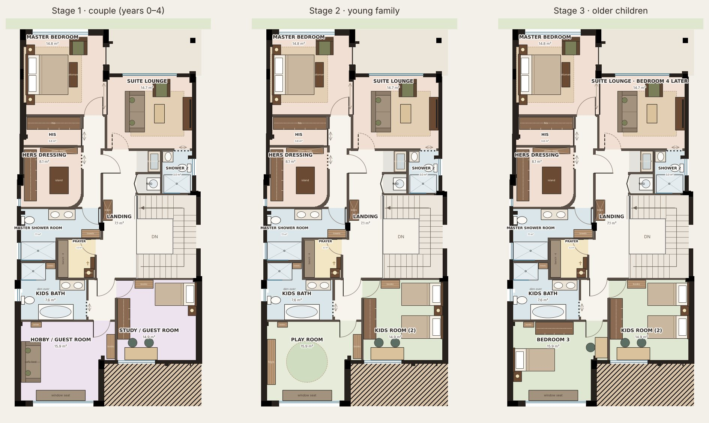
Ground floor: same as H2 · Double kids room 7.5 m²/child · Play room 15.9 m²/child
The idea
- Up the stair, the landing runs straight to the kids wing. The chapel door is on your right after two steps; the kids-wing door is at the far end, 1.6 m further on and facing the other way, so the two never meet.
- The master shower room now fills the whole strip between hers and the chapel: long 1.7 m walk-in shower under the side window, WC on W1, double basin, towel shelf. The suite hall is one straight run from the bedroom to its door.
- The kids bath is a real family bathroom on W2: tub, separate shower, double basin and WC, entered from the kids lobby so both kids rooms reach it the same way.
- The kids lobby is a small square-cornered room with four doors: wing door, double room, play room and bath. No angled bite: the double room is a clean 4 × 4 m box with a 2 m wardrobe wall.
- Everything else is H6: bedroom + lounge behind a 1.65 m sliding wall, lounge shower on E1 with its hidden landing door, stacked laundry + kitchenette at the landing, hers with island and a curved corner, play room with the den over the kids bath.
What changed vs H6, and why
- Master shower room 5.7 → 7.1 m²: the round foyer and the suite-hall tail are gone (Daniel's red mark-up); the room takes their place, so the suite hall stops at the shower-room door instead of running past it.
- Kids bath 5.2 → 7.6 m²: it grows north into the old shower-room corner and east to the kids lobby (Daniel's blue mark-up), gaining a separate shower next to the tub.
- Prayer room 4.9 → 3.3 m²: still an inner room, now a plain 1.9 × 1.95 m rectangle (no apse) with a bench for four facing the icon wall on the east. Its door is in the landing's side wall near the stair, away from the kids door (yellow mark-up).
- Kids lobby: the 45° wall into the double room is gone. The lobby is a straight 1.4 × 2.05 m room just south of the landing; every door in it is square.
- Double room: a clean rectangle with a 2 m wardrobe on the west wall, desks under the street window and the twin beds on the east wall, as before. It is 15.9 → 14.9 m², 1 m² smaller than in H6, because its west wall moves 0.7 m east to make room for the lobby.
- Play room 14.6 → 15.9 m²: it takes the 0.7 m strip the double room gave up, as a niche for book shelves now and the third child's desk at stage 3.
- Hers keeps its curve, now as a soft rounded corner at the end of the suite hall instead of a quarter-circle cut, so hers gets back about 0.4 m².
Movement in and out of every room
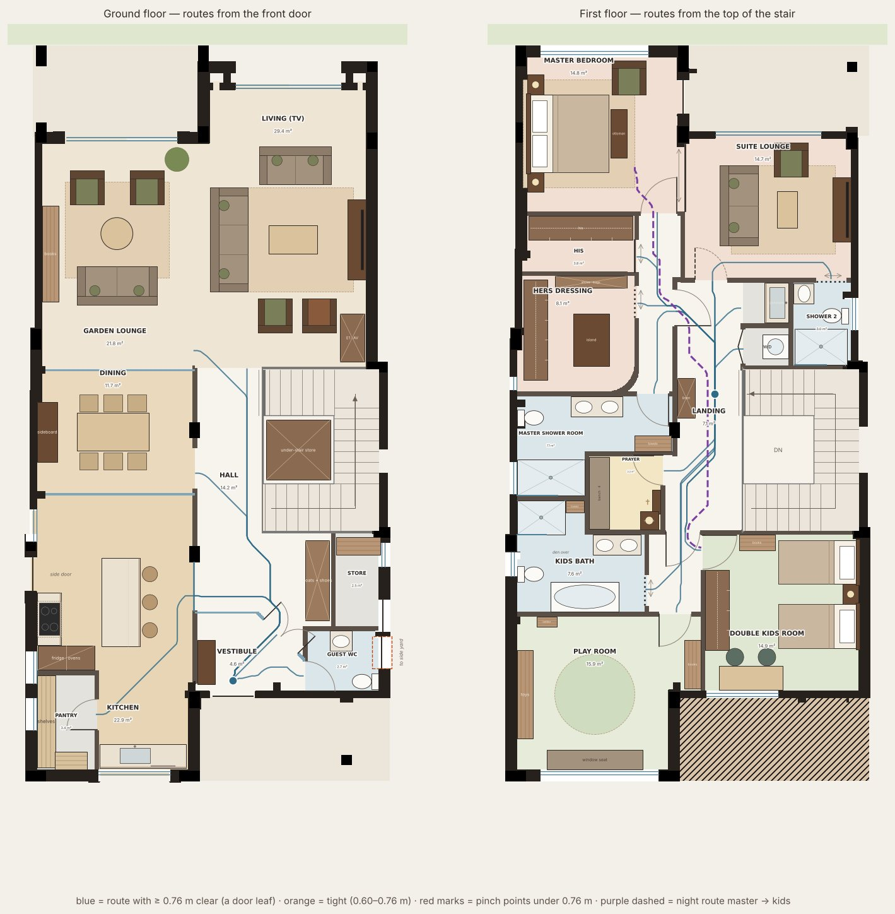
- night route: master bed → kids room: 10.7 m
- stair → laundry: 1.5 m
- bed → shower: 5.9 m
Every first-floor room reached with a door-width path; no room crossed to reach another.
Notes for the architects
- VERIFY ON SITE BEFORE DEVELOPING: the master drawing shows the middle-line column at Y −4.4 on the ground floor but NOT on the first floor (first-floor middle-line columns only at Y −1.3 and −8.0). The kids lobby and the landing step cross that line; if the column does continue upstairs, the lobby must shift east by ~0.3 m.
- Stacks: master shower room on W1 (WC at Y ≈ −1.0, west wall); kids bath on W2 (WC at Y ≈ −4.9, west wall); lounge shower room on E1 (east wall, Y 0.25…2.45). Washer-dryer and kitchenette sink drain into E1 as in H6. All wet rooms are straight-walled and south of Y −0.4 (lounge shower 2.45).
- The master shower room's south wall (Y −3.0) stays clear of the side window Y −2.90…−2.10, which now lights the walk-in shower; no facade change needed.
- Prayer room: inner room, no window. Fit a quiet extract fan (≤ 25 dB) ducted to the west facade through the master shower room ceiling, for candles and incense.
- Secret den over the kids bath: bath ceiling dropped to 2.2 m, a joinery deck above gives ≈ 0.9 m clear; entered by a fixed ladder and hatch from the play room's north wall. The high west window (Y −4.95…−4.35) is over the kids-bath WC and lights the den.
- There is no column on the first-floor middle line between Y −7.8 and −1.5 (only at −1.3 and −8.0), so the kids lobby and the play-room niche can cross the middle line with brick partitions only.
- The double room's west wall (X −100.5) lands 6 cm west of the street window (X −100.41…−98.61); set it out on site so the window reveal stays clear.
- Sliding wall bedroom ↔ lounge, hidden lounge door and kitchenette exactly as H6.
H6-2 H6 · iteration 2 — prayer at the landing
H6 with the chapel moved to the top of the stair: its curved corner turns the landing toward the kids wing, so the master shower room and the kids bath can both take the west bay.
grew from H6 + O5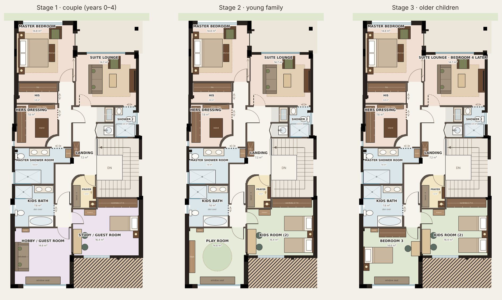
Ground floor: same as H2 · Double kids room 8.2 m²/child · Play room 14.6 m²/child
The idea
- Come up the stair and the little chapel is straight ahead at the end of the landing; its rounded corner sweeps you right, into a short passage and the kids wing door. The suite door stays where it was, at the other end of the landing.
- Master shower room is now 2.9 m across with the old round foyer as its entry: walk-in shower 1.8 m, WC on the west wall at the old drain, double basin, towel cupboard. The suite hall ends at the shower room door instead of in a dead end.
- Kids bath almost doubles (5.2 → 7.6 m²): bathtub, a separate shower, a double basin and the WC at the old W2 drain. Both kids rooms use it from the same little lobby.
- The kids wing is one door off the landing into a small square lobby with four doors: bath, double room, play room, and the way back out. No more 45° wall.
- The double room is a plain rectangle again, with a 2.7 m wardrobe tucked into the recess under the stair edge, twin beds with a shared bedside table, two desks.
- Everything else is H6: bedroom + lounge with the sliding wall, lounge shower room on E1 with its hidden door to the landing, laundry column + kitchenette, hers with the curve, his closed, play room with the den over the bath.
What changed from H6, and why
- Prayer room leaves the west bay. It is now an inner room on the landing, beside the stair and over the old kids-lobby corner: 1.7 × 2.3 m, bench for 3–4 on the west wall facing the icon on the east wall, candle stand; 4.9 → 3.4 m² (smaller than H6's, but no longer eating the two baths). Its north-west corner is a curve (radius 0.7 m) that turns the landing into the kids passage.
- Master shower room grows east into the old suite-hall end and round foyer (the dead end is gone): 5.7 → 7.6 m². It also grows south to Y −2.95 so the side window (Y −2.9…−2.1) now lights the shower instead of sitting on a partition.
- Kids bath grows north and east into the old prayer room's half of the bay: 5.2 → 7.6 m², with a tub AND a separate shower and a double basin. WC stays on the west wall at W2.
- Kids wing entrance: the 45° wall and angled door are gone. A 1.2 m passage runs from the landing past the chapel to one door; behind it is a 1.2 × 1.6 m lobby with a square door to each kids room and a pocket door to the bath.
- Double kids room: clean 4.7 × 3.25 m rectangle plus a wardrobe recess under the stair edge (2.7 m of hanging, back in its corner). 16.4 m². Twin beds are pulled 0.5 m south so the wardrobe doors open freely.
- Kids-lobby linen cupboard dropped (the lobby is now too small for it); the landing linen cupboard opposite the stair top stays.
Movement in and out of every room
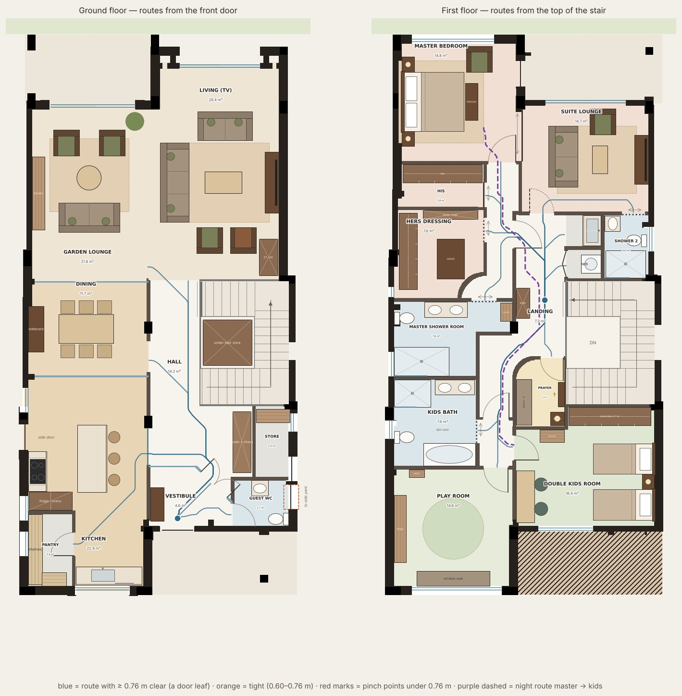
- night route: master bed → kids room: 12.0 m
- stair → laundry: 1.5 m
- bed → shower: 6.0 m
Every first-floor room reached with a door-width path; no room crossed to reach another.
Notes for the architects
- Stacks: master shower room WC on the west wall at Y ≈ −1.0 (W1); kids bath WC on the west wall at Y ≈ −4.9 (W2); lounge shower room unchanged on E1 at the east wall (Y 0.25…2.45), washer-dryer and kitchenette sink drain into E1. All wet rooms have straight walls; the master shower room is an L (main room + the old foyer as its entry), no wet room north of Y −0.4 on the west side.
- Prayer room: inner room, no window. Quiet extract fan (≤ 25 dB) ducted east over the double room's wardrobe recess to the east facade (about 3.5 m run), for candles and incense. Its east wall is solid (stair wall + wardrobe recess behind), so it is quiet.
- VERIFY ON SITE BEFORE DEVELOPING: the master drawing shows the middle-line column at Y −4.4 on the ground floor but NOT on the first floor (first-floor middle-line columns only at Y −1.3 and −8.0). This layout puts the kids passage on that line; if the column does continue upstairs, the passage narrows there and the chapel must shift east by ~0.3 m.
- Secret den over the kids bath: bath ceiling dropped to 2.2 m, joinery deck above gives ≈ 0.9 m clear; entered by a fixed ladder and hatch from the play room's north wall. The den is now larger (≈ 2.9 × 2.95 m). Check the high west window (Y −4.95…−4.35) lights it.
- Sliding wall bedroom ↔ lounge: 1.65 m top-hung panel sliding south into a pocket in the suite-hall / lounge wall (X −101.0, Y 2.45…4.1); needs a timber or steel header in the brick partition (flat slab above, no beam).
- Lounge's landing door is a flush hidden door painted with the wall; at stage 1–2 it is kept locked and the lounge is used from the bedroom; at stage 3 it becomes the lounge-bedroom's own door.
- Kitchenette: sink and under-counter fridge only (no hob, no hood).
H6 T1-R1, softened
T1-R1's bones with the office's curves: a hotel-style suite with a lounge that slides open to the bed, an inner chapel with an apse, and a kids wing behind one door.
grew from T1-R1 + O1, O5, T0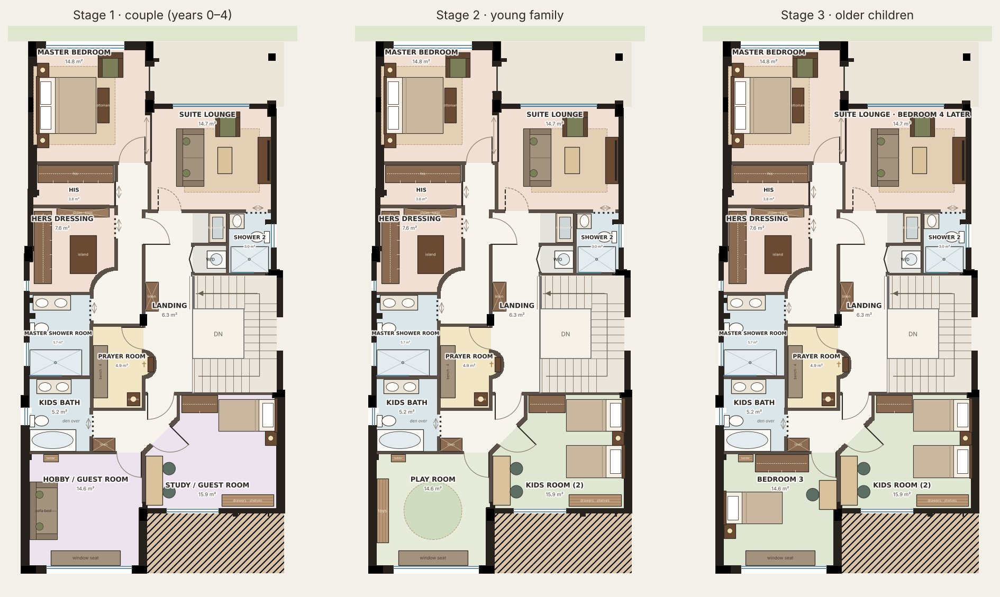
Ground floor: same as H2 · Double kids room 8.0 m²/child · Play room 14.6 m²/child
The idea
- Up the stair, two steps into the landing lobby and the suite door is on your left. Inside, the suite hall runs to the bedroom at the garden end, past his and hers; at its other end a round foyer leads to the shower room.
- Bedroom and lounge are one 30 m² room when the 1.65 m sliding wall is open, and two quiet rooms when it is shut. The lounge has its own WC + shower, so in 15 years it becomes a bedroom with no building work.
- Hers is a real walk-in: wardrobe wall, a 0.9 × 1.4 island, shoe and bag shelves and a curved wall. His is a closed room with a sliding door.
- A small chapel in the middle of the house: no window needed, the icon wall sits in a curved apse facing east, bench for 3–4, candle stand.
- The children have their own wing behind one door: double room, play room (bedroom 3 later), their own bath off the little lobby, and a secret den over the bath reached by a ladder from the play room.
- Washer-dryer column, linen and a kitchenette with sink at the landing, so night feeds, laundry and tea never go downstairs.
What came from where
- Ground floor: H4's, copied verbatim.
- T1-R1: the skeleton — master bedroom in the west garden corner, suite lounge in the east garden bay, master shower room on W1, lounge shower on E1, kids bath on W2, play room west street, double room east street, suite hall on the middle line.
- T0: the suite-hall idea — the lounge has its own door to the landing (built now as a flush hidden door), so it can shut off from the suite on its own at stage 3.
- O1 / O5: the service row at the landing on E1 (kitchenette with sink, stacked washer-dryer, linen); twin 1.1 m beds with a shared nightstand and two desks in the double room; kids bath reached only from the corridor side.
- O5: the curved prayer apse, here bulging into the landing so no void is left behind it; O4 / O5: the 45° kink — the kids lobby enters the double room through a 45° wall.
- O2 / O3: hers with an island and a curved wall (the curve is the entry hall's round foyer).
- T2-A / T2-D: secret den in the 3.2 m height over a bath, reached by a ladder (here from the play room).
- New vs T1-R1: bedroom 19.1 → 14.8 m² (clear) because the lounge gains (13.8 → 14.7 m²) and joins it through a 1.65 m sliding wall; his closed with a slider; hers 6.7 → 7.6 m² with the island; prayer moves off the facade to the inside; laundry becomes a stacked column so the kitchenette fits beside it.
Score
T1-R1, softened: suite hall with closed his and an island hers off a round foyer, lounge behind a 1.65 m sliding wall with its own shower on E1, an inner prayer room with an apse, stacked laundry + kitchenette, kids wing; master shower and kids bath back to back on the west stacks. Blind review (3 reviewers, vs T1-R1, T2-A, O1, O5): 81.6 at Daniel's 50/50, 75.0 on engineering alone (T1-R1 67.0 / 74.1).
Movement in and out of every room
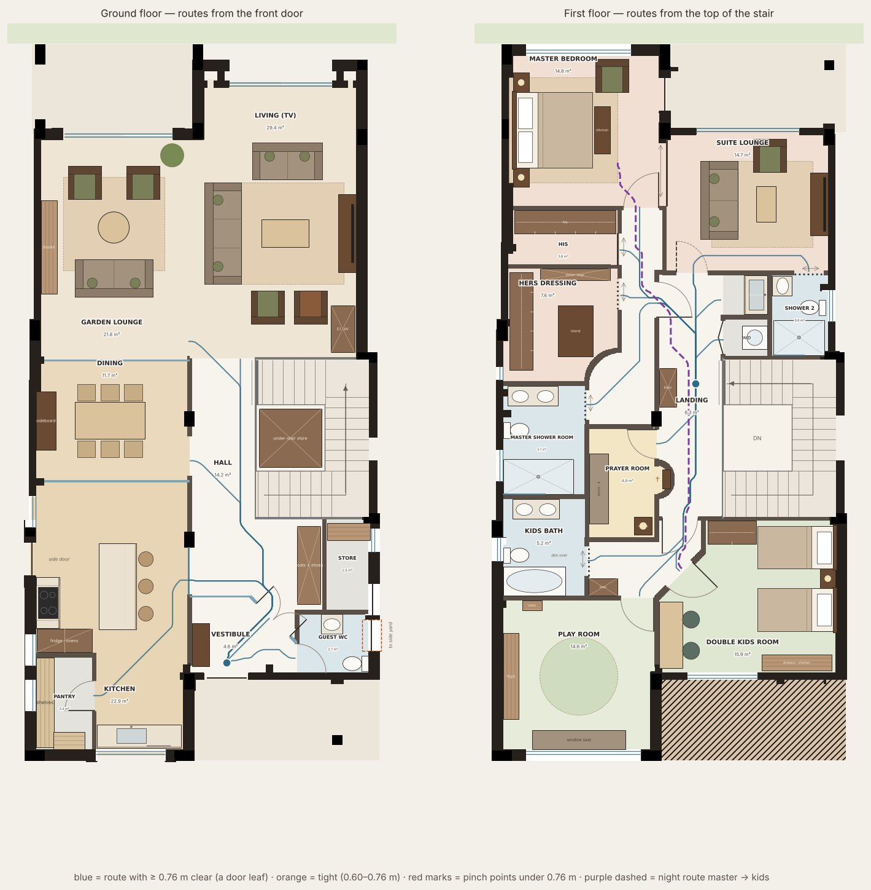
- night route: master bed → kids room: 11.4 m
- stair → laundry: 1.5 m
- bed → shower: 7.0 m
Every first-floor room reached with a door-width path; no room crossed to reach another.
Notes for the architects
- Stacks: master shower room spans Y −3.3…−0.4 on the west wall, its WC at Y ≈ −1.6, 0.6 m from W1; kids bath Y −5.9…−3.3 with its WC at Y ≈ −4.9 on W2 (the two baths share the W2–W1 stretch of west wall); lounge shower room on E1 at the east wall (Y 0.25…2.45). The washer-dryer and kitchenette sink drain into E1 through the shared wall. All wet rooms have straight walls; no wet room north of Y 2.45.
- Prayer room: inner room, no window. Fit a quiet extract fan (≤ 25 dB) ducted to the west facade over the master shower room ceiling, for candles and incense.
- Secret den over the kids bath: bath ceiling dropped to 2.2 m, a joinery deck above gives ≈ 0.9 m clear (3.2 m − 2.2 m − deck); entered by a fixed ladder and hatch from the play room's north wall. Joinery only, no structure; check the high west window (Y −4.95…−4.35) lights it.
- Sliding wall bedroom ↔ lounge: 1.65 m top-hung panel sliding south into a pocket in the suite-hall / lounge wall (X −101.0, Y 2.45…4.1); needs a timber or steel header in the brick partition (flat slab above, no beam).
- Lounge's landing door is a flush hidden door painted with the wall; at stage 1–2 it is kept locked and the lounge is used from the bedroom; at stage 3 it becomes the lounge-bedroom's own door.
- Kitchenette: sink and under-counter fridge only (no hob, no hood).
- The stair top now faces the landing linen cupboard; the suite door is 2 m further on, in the landing lobby beside the lounge's hidden door (chosen so the movement route to the bed runs through the suite hall, not the lounge).
H5 The office, finished
The office's first floor with its loose ends tied: a master suite with its own lounge behind a sliding wall, two bathrooms on the existing drains, and a kids wing with one door.
grew from O1 + O5, H4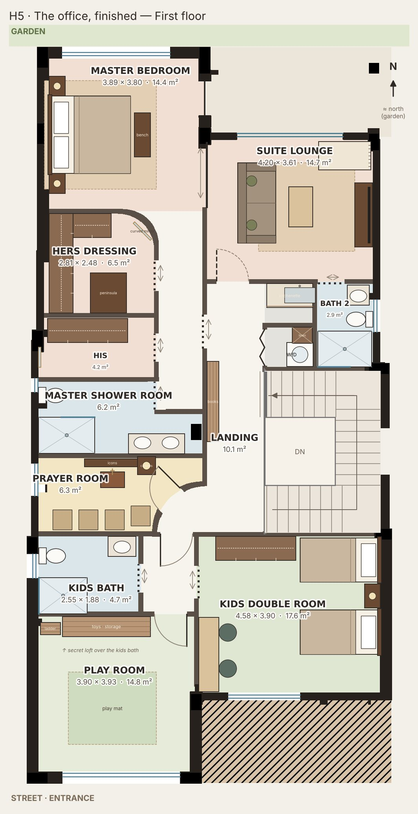
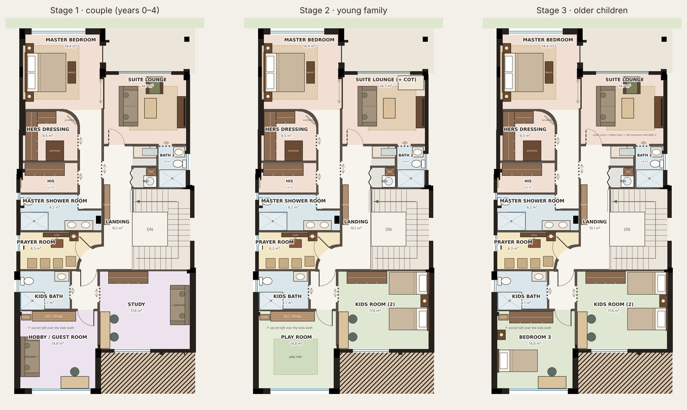
Ground floor: same as H2 · Kids double room 8.8 m²/child · Play room 14.8 m²/child
The idea
- Your end of the house is one suite behind one door: bedroom over the garden, his and hers dressings, your shower room, and a lounge with its own bathroom. Slide the 1.6 m wall open and bedroom and lounge become one 29 m² room with two garden views; slide it shut for a quiet bedroom while the other one watches TV next door.
- Hers is a proper walk-in, about 1.5 times his: wardrobes on two walls, a dressing peninsula and a curved full-height mirror where the wall rounds into the suite hall. His is its own closed room with a 2 m wardrobe run.
- At the top of the stair you face a bookcase, with the kitchenette niche (sink + under-counter fridge) and a laundry cupboard (stacked washer/dryer + linen) on your left: morning coffee and the washing never go downstairs.
- The children have their own wing: one door from the landing opens to a small lobby where the double room, the play room and their bathroom each have their own door. Nobody walks through anyone's room. Over the kids bath sits a secret loft reached by a ladder in the play room.
- The prayer room has a solid wall for the icons with the candle stand beside them, four seats facing it and a soft side window; its curved corner lets the landing swing round towards the kids' wing.
- Nothing has to be built later. Stage 3: the play room becomes the third child's bedroom, and when the children grow up the lounge becomes a 4th bedroom with its own bathroom. Shut the sliding wall and use the hidden door.
What came from which plan
- Ground floor: H4's, copied verbatim (T1-R3 ground via H2).
- O1 (KK 1): skeleton: master over the west garden with the bed on the west wall and the terrace door, east-garden room behind a slider on the X −101.0 line, hers + his stacked in the west bay, kids double room east-street with twin 1.1 m beds + shared nightstand and two desks, play room west-street, kids bath on W2.
- O5 (Angles 2): the curved prayer wall and the corridor that bends at 45° towards the kids. Here it is a quarter-circle that rounds the prayer room's corner and turns the landing into the kids lobby.
- O1 / O4 / O5 service row: kitchenette + laundry beside the east-garden room's WC/shower on stack E1 (now a kitchenette niche + a stacked-laundry cupboard).
- O2 / O3 (island dressings) + H4: hers with a curved wall; the island becomes a 0.9 × 1.0 peninsula because hers is 2.9 m wide (needs ≥ 2.6 m clear between wardrobe fronts).
- T1-R1 / T2-A: one suite door with a suite hall (pocket doors to shower room, his, hers); T1-R1's hidden door idea (here: the lounge's landing door); T1-R3 / T2-A: ladder loft over the kids bath.
- T2-D / H2: the suite lounge and its own shower as the future en-suite bedroom (Daniel 19 Oct, 20:04).
- New in H5: lounge bath (WC + basin + shower) entered only from the lounge; kids lobby with four doors (wing door, double room, play room, kids bath) replacing the office's open corridor; landing bookcase facing the stair.
Score
The office, finished: O1/O5's skeleton with a suite lounge behind a 1.6 m sliding wall and its own bath on E1 (a bedroom in ~15 years), closed his + curved hers, the stacked laundry + kitchenette row, kids wing with its own lobby. Blind review (3 reviewers, vs T1-R1, T2-A, O1, O5): 80.5 at Daniel's 50/50, 76.0 on engineering alone (T1-R1 67.0 / 74.1).
Movement in and out of every room
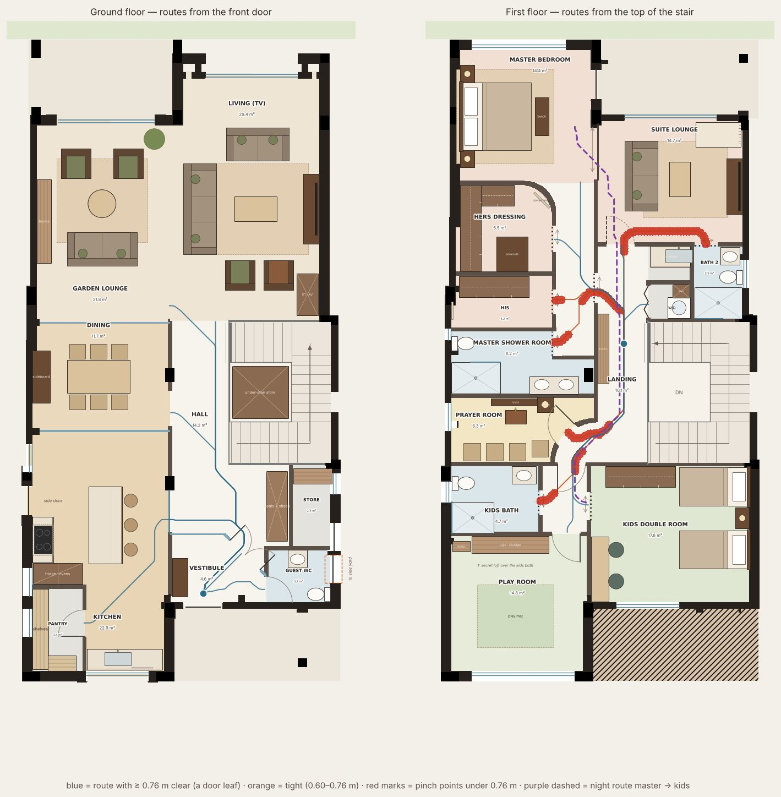
- night route: master bed → kids room: 12.1 m
- stair → laundry: 1.5 m
- bed → shower: 6.5 m
Every first-floor room reached with a door-width path; no room crossed to reach another.
Notes for the architects
- Stacks: master shower room on W1 (WC and shower against the west wall, Y −1.8 … −0.1); kids bath on W2 (shower and WC on the west wall, Y −5.8 … −3.9); lounge bath on E1 (WC on the east wall at Y ≈ 1.5, shower Y 0.3 … 1.2); kitchenette sink and washer/dryer beside it, ≤ 1.5 m from E1. No wet room is north of Y 2.45. Verify on site that the existing W1/W2/E1 stacks are where the developer's drawing shows them.
- Prayer room: no ducted ventilation in the drawing. Add a quiet extract fan (≤ 25 dB, run-on timer) for candle and incense smoke, ducted to the west side facade beside the existing side window (Y −2.9 … −2.1), or through the master shower room's extract route. The side window can be fitted with frosted / stained glass; the room does not depend on it.
- Lounge bath and kids bath: mechanical extract (the lounge bath has the east window Y 1.19 … 1.99; the kids bath has the west window at W2).
- Secret loft over the kids bath: kids bath ceiling dropped to ≈ 2.25 m (it needs a service void anyway), timber deck above, ≈ 0.85 m crawl height under the 3.2 m slab, ≈ 2.5 × 1.8 m. Reached by a fixed ladder in the play room's north-west corner through a hatch in the play room wall. Build it as joinery with a guard rail at the hatch. Needs the structural engineer to confirm the deck spans; no slab work.
- Sliding wall master ↔ lounge: 1.6 m clear on the X −101.0 line (Y 4.3 … 5.9), stopping before the middle column at Y 6.08. Use a top-hung heavy slider (acoustic seals) so the bedroom can be shut off completely for stage 3.
- Hidden door (lounge ↔ landing): flush, handle-less, painted like the wall. It is fitted now but stays closed until the lounge becomes a bedroom; the lounge's day-to-day entrance is through the master suite.
- Prayer door is a hinged door set in the curved wall (straight leaf in a short flat section of the curve).
- Hers peninsula is 0.9 × 1.0 m against his wall, not a full island: hers is 2.9 m wide, and a 0.9 × 1.4 island with 0.85 m aisles needs ≥ 2.6 m between wardrobe fronts.
- Laundry is a 1.25 × 1.1 m walk-in cupboard behind bifold doors (stacked washer/dryer + linen shelves); ironing happens on the landing.
- Middle column at Y −1.3 sits in the master shower room's east wall beside the double basin (box it in as a niche).
T1-R3 Master plan, round 3 — off the grid where it pays
Round 2, with the grid broken in the three places where a 45° line creates space out of nothing.
grew from T1-R2

Ground floor: its own · Double kids room 17.8 m²/child · Playroom 14.2 m²/child · Suite lounge 12.4 m²/child
The idea
- Entrance: the vestibule's glass wall turns 45°, so the front door opens onto a diagonal view of the hall, the stair and the garden beyond; guests are steered to the living and the WC, and the coat wall gains a full 2 m run.
- Upstairs junction: the prayer room's corner is cut at 45°. Its door now faces you as you turn from the stair, the corridor corner widens into a small landing, and the icon wall keeps a clean east wall.
- Secret den: the kids bath ceiling drops to 2.3 m (it needs a service void anyway) and the 0.85 m above becomes a hidden loft den reached by a ladder in the playroom — a room that costs no floor area.
- The E1 drain stack is wrapped into a walnut AV column in the living room instead of a boxed-out corner.
- Everything that worked in round 2 stays: one suite door, dressing gallery, hers walk-in, windowed shower room, utility lobby, lockable lounge.
Changes vs round 2
- Vestibule: straight glass screen → 45° glazed wall with a 1.2 m double door; guest WC door slid to the street end of the vestibule.
- Kitchen ↔ hall glass slider re-centred (1.2 m) clear of the new vestibule.
- Prayer room: north-east corner cut at 45° with the door on the diagonal (4.2 → 4.0 m²); corridor junction +0.2 m².
- Loft den over the kids bath (≈ 2.9 × 1.5 m, 0.85 m high) + ladder; walnut column around the E1 stack downstairs.
Score
Round 2 plus three 45° moves (vestibule, prayer corner) and a secret loft den; his dressing is now a closed room off a suite lobby, which lifts upstairs circulation to 18 %.
Movement in and out of every room
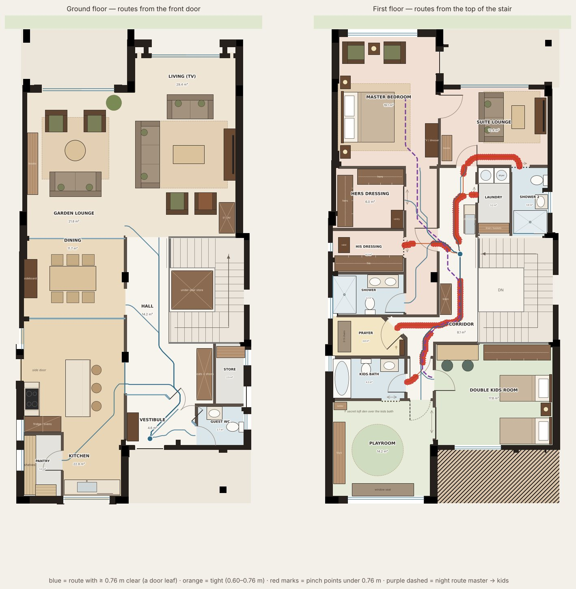
- night route: master bed → kids room: 13.0 m
- stair → laundry: 3.1 m
- bed → shower: 8.3 m
Every first-floor room reached with a door-width path; no room crossed to reach another.
T1-R2W Round 2 + guest WC with an outside door
Daniel's variant: the guest WC opens both to the vestibule and straight to the side yard, for garden and pool days.
grew from T1-R2

Ground floor: its own · Double kids room 17.8 m²/child · Playroom 14.2 m²/child · Suite lounge 12.4 m²/child
The idea
- The east side window of the guest WC becomes a 0.8 m outside door onto the side yard, the path between the street and the garden.
- Garden guests, children playing outside and the gardener use the WC without walking through the house or the travertine floors.
- Inside door from the vestibule stays, so guests at a dinner still use it without going outside.
- Both doors lock from inside; the room is re-planned so neither door swings into the WC or the basin.
- Everything else is round 2.
Changes vs round 2
- Guest WC: east window replaced by an outside door (SIDE facade: needs the compound's approval, like the store door).
- WC moved to the street-side wall, basin to the hall-side wall; room stays 2.7 m².
Score
Round 2 with the garden-access guest WC: great for garden days, costs one side-facade request.
Movement in and out of every room
- night route: master bed → kids room: 13.0 m
- stair → laundry: 3.1 m
- bed → shower: 8.3 m
Every first-floor room reached with a door-width path; no room crossed to reach another.
Notes for the architects
- Compound request: guest WC east window (Y -7.20…-6.60) becomes a door Y -7.25…-6.45.
T1-R2 Master plan, round 2 — the suite and the stair top
Round 1 plus a real hotel suite: one door, a dressing gallery, a windowed shower room, and twice the hanging space.
grew from T1-R1

Ground floor: its own · Double kids room 17.8 m²/child · Playroom 14.2 m²/child · Suite lounge 12.4 m²/child
The idea
- Suite door straight ahead as you reach the top of the stair. Inside: his dressing gallery (3.4 m) leading to the bedroom, hers walk-in (4.7 m) behind a sliding door, shower room with its own window.
- Kitchen opens to the hall through a 1.6 m sliding glass wall (closed for guests and frying, open for family life), plus the glass walls to the dining that you already have.
- Stair top becomes the family utility heart: kitchenette, a 3.1 m² laundry with machines side by side, and the lounge's own door — all outside the suite.
- Suite lounge 13 m² with its own shower room: a private sitting room now, a bedroom with an ensuite at stage 3.
- Kids wing unchanged from round 1: one wing door, hidden playroom door, bath reachable from inside the playroom.
What changed and where it came from
- Suite rebuilt: dressing gallery + hers walk-in + shower room in the old his / shower / hers strip; suite hall and passage folded into the gallery (1.2 m² less corridor).
- Hanging space: his 2.75 → 3.4 m, hers 3.35 → 4.7 m. Master shower room 5.4 → 5.3 m² but with a window.
- Kitchen ↔ hall: 0.9 m pocket door → 1.6 m sliding glass wall.
- Laundry 2.7 → 3.1 m², shower 2 grows; suite lounge 13.8 → 13.0 m².
- Under-stair store fitted in the stair well footprint (ground).
Score
The suite becomes a real hotel sequence with almost twice the hanging space and a windowed shower; utility heart at the stair top.
Movement in and out of every room
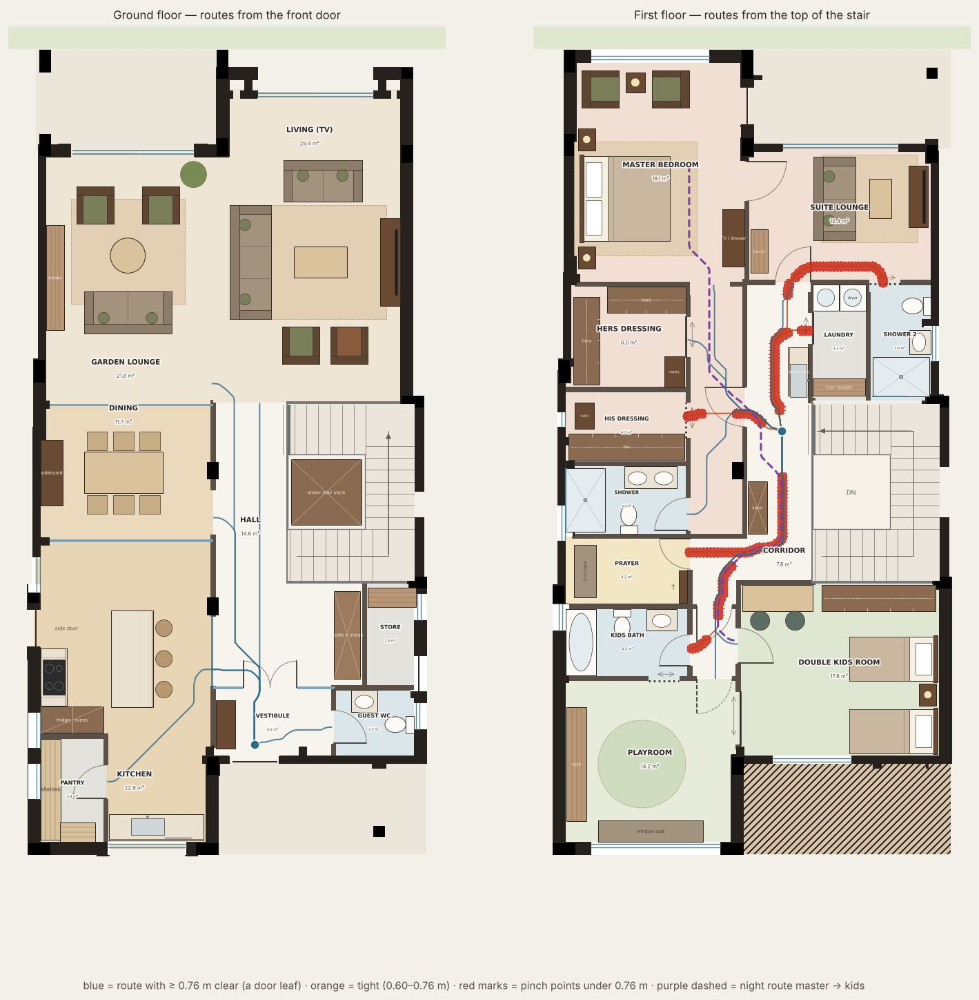
- night route: master bed → kids room: 13.0 m
- stair → laundry: 3.1 m
- bed → shower: 8.3 m
Every first-floor room reached with a door-width path; no room crossed to reach another.
T1-R1 Master plan, round 1 — the council's fixes
Same bones as your master drawing. Every fix the five reviewers agreed on, and nothing else.
grew from T0

Ground floor: its own · Double kids room 17.8 m²/child · Playroom 14.2 m²/child · Suite lounge 13.8 m²/child
The idea
- Kitchen gets the street window and a 3-stool island; pantry becomes a 3.4 m² walk-in; a pocket door from the hall makes the shopping route 6 steps.
- A real entry sequence: vestibule with a glazed door, guest WC off the vestibule, 2.2 m coats-and-shoes wall in the hall.
- The 50 m² salon becomes two rooms in one: TV living for 7 in the east bay, a garden lounge by the terrace in the west bay.
- Upstairs: hotel suite door facing the top of the stair; walk-in shower with double basin (no tub); kids wing behind one door with the bath opening from inside the playroom.
- Utility lobby at the stair top: kitchenette back-to-back with a side-by-side laundry on the old ensuite stack; suite lounge keeps its own lockable door and a shower room for stage 3.
What changed and where it came from
- Pantry 7.1 → 3.4 m²; kitchen window regained.
- Kitchen ↔ hall: new 0.9 m pocket door. Hall ↔ dining: new 1.0 m opening.
- Vestibule + glazed double door; guest WC door moved into the vestibule.
- Master shower room: tub out, 1.6 m walk-in + double basin.
- Laundry 1.9 → 2.7 m², machines side by side; kitchenette moved off the corridor onto the laundry's wet wall.
- Kids wing door; double room enters from the kids lobby; kids bath pocket door from the playroom; corridor linen cupboard 1.6 m.
Score
Fixes every point the council agreed on without touching the bones: kitchen, entry, salon zones, shower, laundry, kids wing door.
Movement in and out of every room
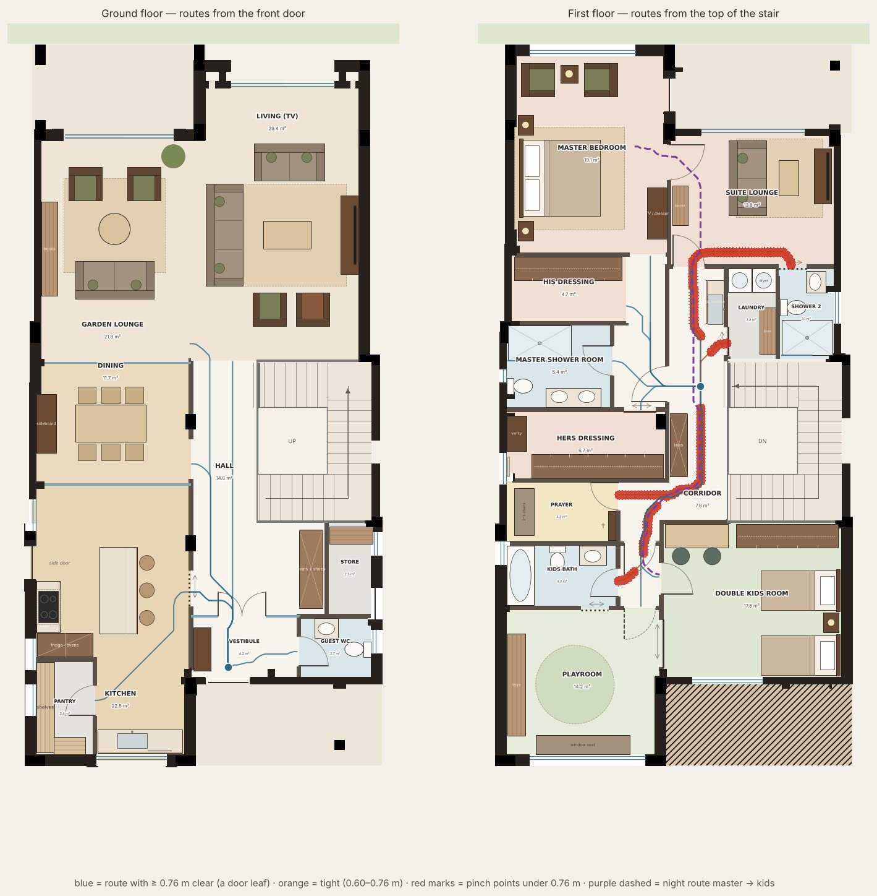
- night route: master bed → kids room: 13.4 m
- stair → laundry: 1.5 m
- bed → shower: 9.1 m
Every first-floor room reached with a door-width path; no room crossed to reach another.
T1-X Challenge the brief
T1-R1 plus the points most of the council pushed back on. Judge each alone; any can go back to the brief.
grew from T1-R1

Ground floor: its own · Double kids room 17.8 m²/child · Playroom 14.2 m²/child · Suite lounge 13.9 m²/child · Flex room 11.2 m²/child
The idea
- Ground flex room 11.2 m² (door, queen bed, wardrobe): a parent after a birth or surgery, a grandparent, you two in old age; a quiet room otherwise. Costs most of the garden lounge (21.8 → 9.8 m²).
- Guest WC gets a 0.9 × 0.9 shower (2.7 → 3.0 m²) for long stays. It is 3 rooms from the flex room: fine for a guest, not a wheelchair.
- Dining: table for 6 daily, extends to 2.4 m for 10 at Christmas and Easter (dashed). No extra floor; tight to the wall on feast days.
- One walk-through dressing (bed → dressing → shower): 6.4 m of wardrobe vs 6.1 m (hers 4.1, his 2.3), one wall and two doors fewer. You lose two closable rooms.
- Kids bath: 0.9 × 1.4 shower with hand spray + 1.2 m twin basin, no tub. Faster mornings; babies need a baby tub.
- Laundry takes the prayer slot on the kids-bath stack: window, drying rack, 2.8 → 4.2 m². Prayer becomes an icon alcove at the landing; kitchenette loses its sink.
Challenges vs the brief
- 1 · Flex room +11.2 m² from the garden lounge (−12.0 m²); new west window.
- 1 · Guest WC +0.3 m² with shower (vestibule wall moves 0.2 m).
- 2 · Dining 11.6 m² unchanged; extending table 1.8 → 2.4 m (6 → 10).
- 3 · His 4.75 + hers 6.66 → shared dressing 10.85 m²; wardrobe +0.3 m; new 1.6 m² linen closet.
- 4 · Kids bath 4.3 m² unchanged: tub → 0.9 × 1.4 shower, twin basin.
- 5 · Laundry +1.4 m² with window + drying rack; kitchenette sink removed.
- 6 · Prayer room 4.2 m² → icon alcove 2.9 m² (−1.3 m²); frees the slot for the laundry.
- Note · Daniel has since ruled (19 Oct) that HIS dressing must be a closed room with a door; the shared walk-through dressing (3) is shown for comparison only.
Score
Wins a ground-floor flex room, a laundry with a window and more wardrobe, but shrinks the garden lounge and needs two new side windows.
Movement in and out of every room
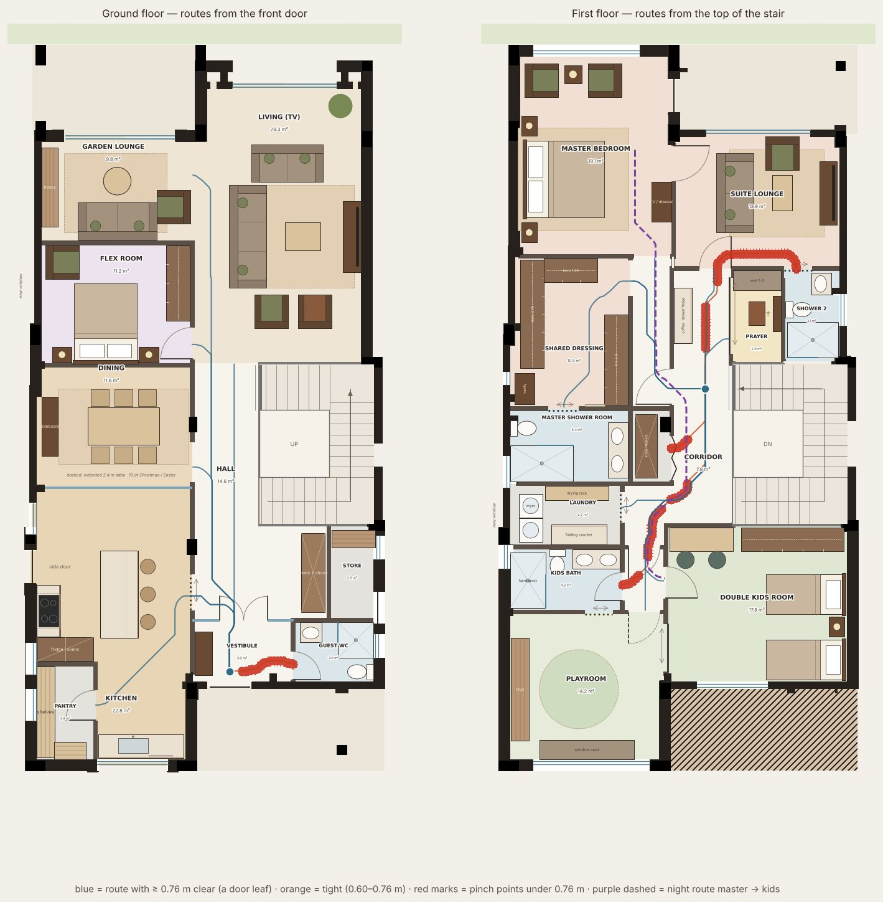
- night route: master bed → kids room: 12.2 m
- stair → laundry: 4.5 m
- bed → shower: 7.6 m
Every first-floor room reached with a door-width path; no room crossed to reach another.
Notes for the architects
- Compound request 1 (ground, west facade): new window ≈ 0.8 m wide at Y +1.8…+2.6 for the flex room.
- Compound request 2 (first, west facade): new window ≈ 0.6 m wide at Y −3.9…−3.3 for the laundry (beside the existing high kids-bath window).
- Wet points: laundry moves from the landing to the W2 stack beside the kids bath; kitchenette sink deleted; guest WC gains a shower in its existing drain zone; master and lounge showers stay put.
T0 Master plan as drawn (baseline)
Your current master drawing (C37-38 FINAL + proposal, 2026-10-18), redrawn in the studio format so every concept is measured the same way.


Ground floor: its own · Double bedroom 17.1 m²/child · Playroom / modular room 14.3 m²/child · Suite lounge / future bedroom 16.3 m²/child
The idea
- Ground: kitchen + pantry on the street side of the west bay, dining between two movable glass walls, one 50 m² great room, entrance hall with guest WC and an outside-access store.
- First: master suite in the garden half (bedroom, his + hers dressing, shower room, suite lounge with its own bath), kids wing in the street half (double room, playroom, kids bath off a lobby), prayer room and kitchenette mid-house.
Score
Your master as drawn: the only plan with the whole 15-year path, but a closed kitchen, no entry sequence, a 50 m² salon and thin storage.
Movement in and out of every room
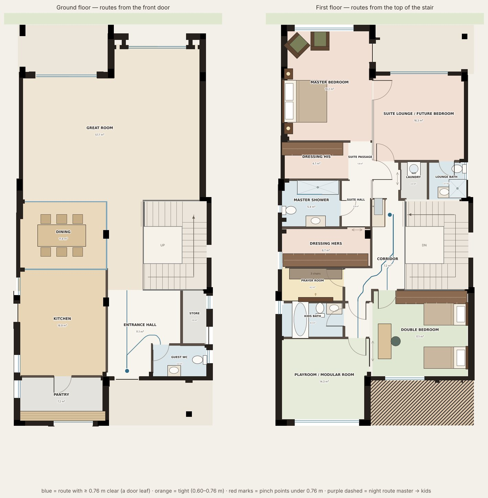
- bed → shower: 6.3 m
Open points: first: Master bedroom cannot be reached with 0.60 m clear; first: Dressing his cannot be reached with 0.60 m clear; first: Suite passage cannot be reached with 0.60 m clear; first: Master shower cannot be reached with 0.60 m clear; first: Suite hall cannot be reached with 0.60 m clear; first: Dressing hers cannot be reached with 0.60 m clear; first: Prayer room cannot be reached with 0.60 m clear; first: Kids bath cannot be reached with 0.60 m clear; first: Vestibule cannot be reached with 0.60 m clear; first: Laundry cannot be reached with 0.60 m clear; first: Lounge bath cannot be reached with 0.60 m clear; first: Suite lounge / future bedroom cannot be reached with 0.60 m clear
T2-A Family side · Guest side
The house splits lengthwise: the family lives down the west bay, guests are received in the east bay, and one wide screen joins or separates them.


Ground floor: its own · Double kids room 13.1 m²/child · Second kids room 11.2 m²/child · Suite lounge 14.2 m²/child
The idea
- Two living rooms that close: a 27 m² family room (TV + play, terrace) and a 28 m² guest salon for 7 (garden slider). A 4.4 m walnut folding screen opens them into one 55 m² room for Christmas.
- The cook sees the whole family side: 3-stool island, hood on the west wall, glass slider to the dining; groceries come in by the west side door, never past guests.
- A 45° portal ends the hall and turns guests diagonally toward the garden; the guest WC door hides on a 45° wall in the vestibule.
- Parents own the west bay behind one door: a suite hall leads past the shower room (double basin, WC alcove), his closed dressing (2.3 m) and her larger closed dressing (3.7 m + full mirror) to the king bedroom on the garden.
- Shared kids bath on W2: a door from the second kids room and one from the kids lobby beside the double room. Stage 3: rooms of 13.1 / 11.2 / 14.2 m², the lounge with its own shower.
- Space out of nothing: a curved chapel front for the prayer room facing the real east wall, a secret den behind a flush panel, a sleep-over loft over the kids bath.
Big moves vs the master plan
- Ground: kitchen → dining → family room in the west bay; the 50 m² salon becomes a closable 28 m² guest salon.
- Folding screen on the column line; glass slider kitchen ↔ dining; 45° hall portal and 45° guest WC door.
- First: linear suite with one diagonal dressing; lounge keeps shower on E1 + lockable landing door.
- Kids bath between the kids rooms; laundry with street window; chapel + secret den south of the stair.
- Round 2 (Daniel 19 Oct): the walk-through dressing is split into a closed HIS (3.8 m²) and a larger closed HERS (5.1 m²) off a 1 m suite hall (one suite door, now mid-landing); shower room 5.1 m² with the WC in an alcove. Movement fixes: kids lobby (ladder to the loft) gives the kids bath and double room their doors without crossing a bedroom; guest-WC 45° wall slid 0.2 m so the door can be reached; store marked outside-only; lounge-shower fixtures and door re-set, lounge sofa nudged north, armchair dropped; den door 0.85 m; landing books moved; double-room wardrobe 2.4 m on the east wall.
Score
Two living rooms that close or join, a Jack-and-Jill kids bath, a chapel and a secret den; with his and hers now closed rooms off a suite hall, upstairs circulation rises to 17 %.
Movement in and out of every room
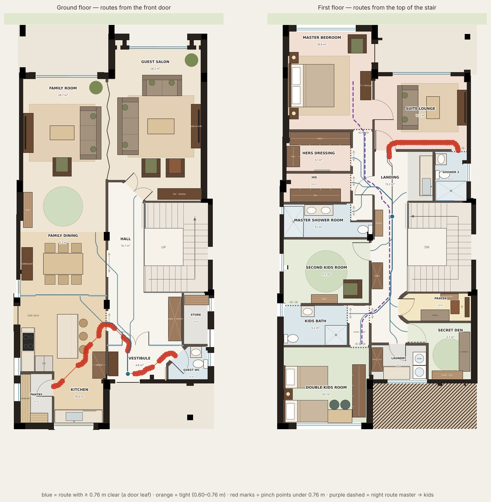
- night route: master bed → kids room: 13.4 m
- stair → laundry: 5.9 m
- bed → shower: 6.3 m
Every first-floor room reached with a door-width path; no room crossed to reach another.
Notes for the architects
- Sleep-over loft over the kids bath (2.9 × 1.9 m, 0.9 m headroom) on a timber deck; ladder in the kids lobby.
- Secret den has no window: an east-side window at Y −7.2…−6.6 (or a high vent) to be raised in the side-window negotiation.
- Laundry waste runs ≈0.8 m east to a new stack in the guest-WC wall below; extract to the east facade.
T2-C Soft courtyard
Curves where you walk, straight walls where you live: the house flows round the stair like a courtyard.
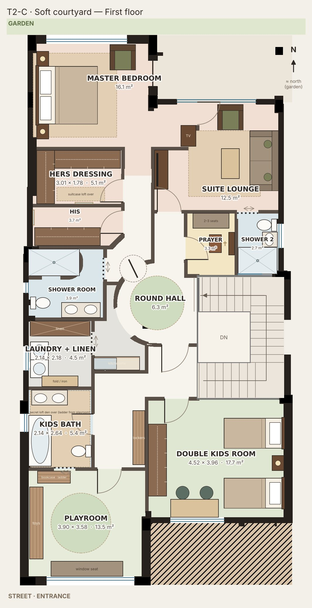
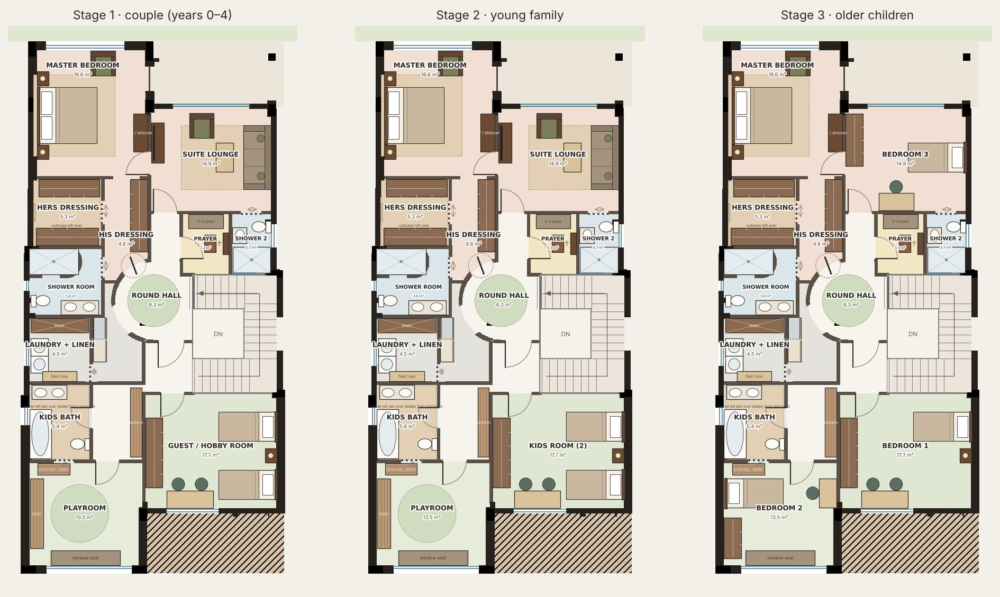
Ground floor: its own · Double kids room 17.7 m²/child · Playroom 13.5 m²/child · Suite lounge 12.5 m²/child
The idea
- One curved wall does the guest's thinking: walk up the hall and it sweeps you round the stair into the TV living, while a 45° arch on your left opens the round dining room.
- Dining moves to the terrace: a round walnut table for 6 (8 with leaves) under a round travertine ceiling cove, in a room with soft corners.
- The old dining zone becomes the family's everyday table: a faceted walnut booth for 6 inside the open kitchen, with a 4.3 m² walk-in pantry and glass panels that close the whole kitchen off.
- Upstairs you arrive in a round hall: every door opens off it. The suite through a walnut pivot door, the kids' wing, the prayer room, and a kitchenette niche cut into the curve.
- Hotel suite behind one walnut pivot door: a short suite lobby with a 45° corner leads to the bedroom, and opens into his dressing (closed room, 2.2 m), hers (4 m of wardrobe) and a shower room with a curved walk-in shower. The suite lounge opens off the bedroom and becomes Bedroom 3 with its own shower and lockable door.
- Space out of nothing: a secret loft den over the kids' bath (ladder behind the playroom bookcase), suitcase loft over the hers dressing, linen niche in the curve's corner.
Big moves vs the master plan
- Dining to the terrace; old dining zone = breakfast booth inside the kitchen.
- Curved wall + 45° arch at the top of the hall replace the straight salon opening.
- Kitchen closable on all sides with sliding glass; pantry door on a 45° corner.
- Upstairs corridor replaced by a round hall; kitchenette + laundry on the west wet spine.
- Kids wing behind one door; lofts over the kids bath and hers dressing.
- Round 2 (Daniel 19 Oct): his dressing is a closed room off a new suite lobby; every room reachable with a clear way in; dining gets a reading corner.
Score
The most spacious feel (curved guest wall, round dining, round upstairs hall, suite lobby with a 45° corner), his dressing now closed; the garden dining room is still twice the brief and upstairs circulation is 17.5 %.
Movement in and out of every room
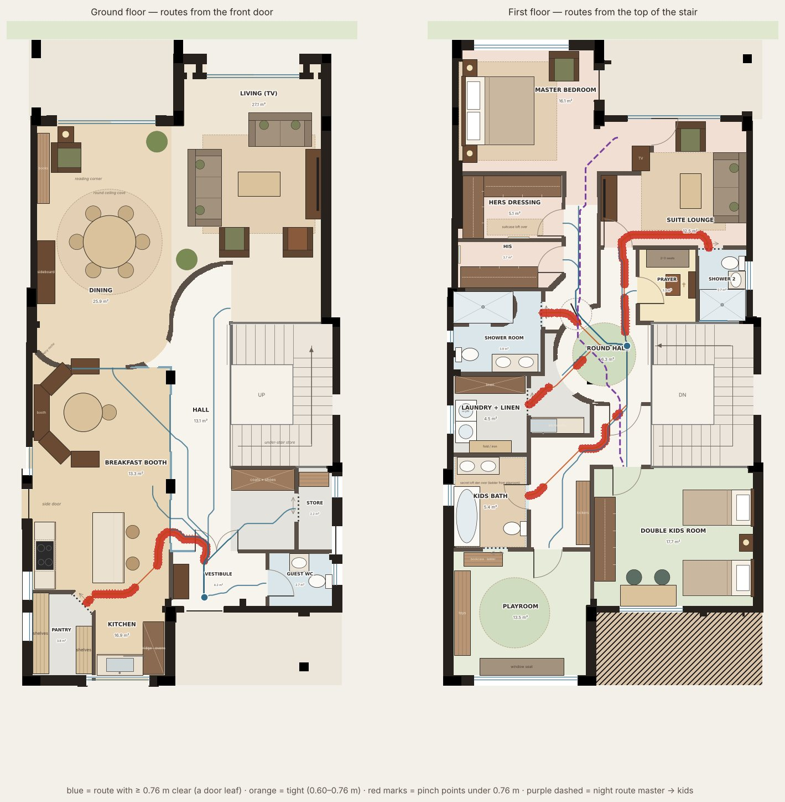
- night route: master bed → kids room: 10.4 m
- stair → laundry: 3.5 m
- bed → shower: 6.0 m
Every first-floor room reached with a door-width path; no room crossed to reach another.
Notes for the architects
- Candles in the prayer room: LED candles, or add a small extract to the shower-room stack (no window).
- Curves are brick + gypsum plaster on a plywood template; radii 1.2–1.7 m (ground) and 1.4 m (round hall) — no curved glass, no curved joinery.
T2-D Folded house
One walnut wall folds at 45° through the suite, curves soften every turn, and the 3.2 m section hides two lofts.
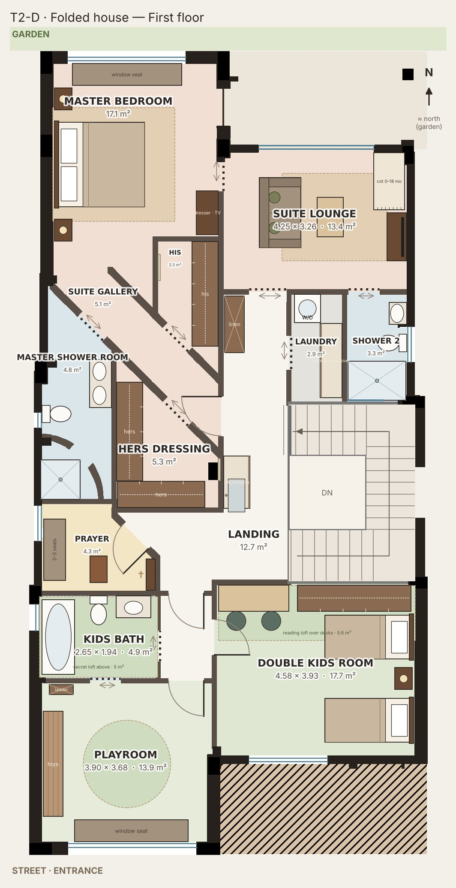
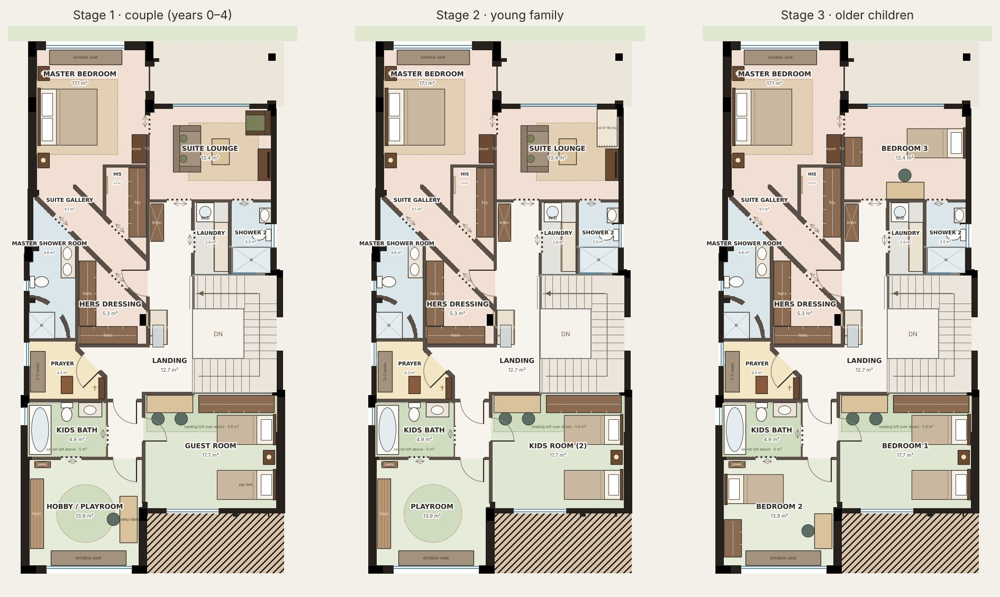
Ground floor: its own · Double kids room 17.7 m²/child · Playroom 13.9 m²/child · Suite lounge 13.4 m²/child
The idea
- Top of the stair, the suite door. Behind it a 45° suite gallery runs to the bed: the folded walnut wall hides his closed dressing (2.6 m hanging) on one side, pocket doors to hers (4.3 m hanging) and the master bath on the other.
- The diagonal pays: the slanted wall is 3.0 m long where a straight one would be 2.1 m, and the bedroom's leftover corner becomes his closed dressing.
- Space out of nothing, from the 3.2 m section: a secret crawl-in loft over the kids bath (5 m²), a reading loft over the double room's desks (5.6 m²), suitcase lofts over the dressings.
- Curves where you turn: a quarter-circle walk-in shower (no glass), a curved glass vestibule looking straight through to the garden, a curved half-wall wrapping the round dining table.
- Prayer room door on a 45° corner, icons on the east wall facing the seats. Guest WC with a second door via the garden store for garden days.
Big moves
- 45° suite gallery; his (closed, behind the walnut fold), hers + master bath (stack W1) off it.
- Quarter-circle shower; chamfered prayer door; landing heart: kitchenette, linen, laundry 3.2 m².
- Lofts: crawl loft over the kids bath, desk platform loft, storage lofts over the dressings.
- Ground: curved glass vestibule, walnut pivot wall to the kitchen, curved dining half-wall.
- Round 2 (Daniel 19 Oct): HIS is now a closed 3.3 m² room (2.6 m wardrobe + mirror) behind the folded walnut wall, pocket door off a slimmer suite gallery facing the hers door; hers 5.3 m² stays larger. Movement fixes: kitchenette moved onto the hers wall of the landing (frees the prayer door), prayer chamfer pushed back, lounge doors re-sited (landing door clear of the linen, suite pocket door north of the dresser), lounge shower widened 12 cm and re-laid, cot/armchair swap in the lounge corner, salon armchairs spread, vestibule bench off the guest-WC door.
Score
The boldest plan: a 45° walnut fold through the suite (his dressing now a closed room behind it), curves at every turn and about 20 m² of lofts won from the 3.2 m section; the suite entry gallery pushes upstairs circulation to 18 % and the double kids room still reaches its bath across a lobby.
Movement in and out of every room
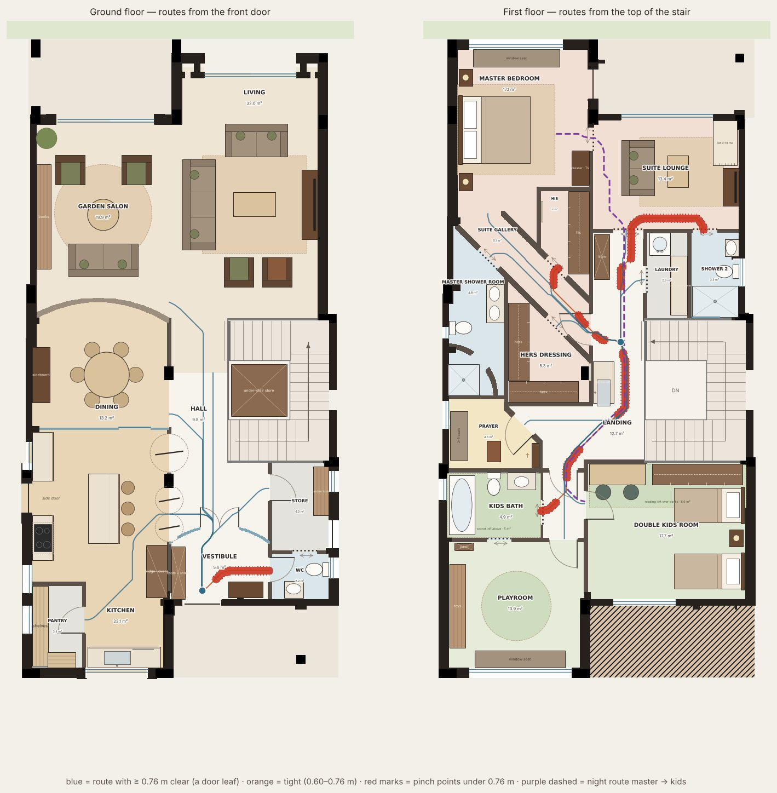
- night route: master bed → kids room: 13.1 m
- stair → laundry: 2.1 m
- bed → shower: 4.6 m
Every first-floor room reached with a door-width path; no room crossed to reach another.
Notes for the architects
- Kitchenette (landing, on the hers wall) drains under the hers dressing floor to W1 (about 4 m, raised floor).
- AC bulkheads over the suite gallery, his + hers dressings and landing; the bedroom, lounge and kids rooms keep the full 3.2 m.
- No facade changes: every window and door stays where the developer drew it.
O1 Office KK 1 — family living
The office's first-floor plan as drawn: a closed master suite with two stacked dressings, and a family living with kitchenette over the garden.
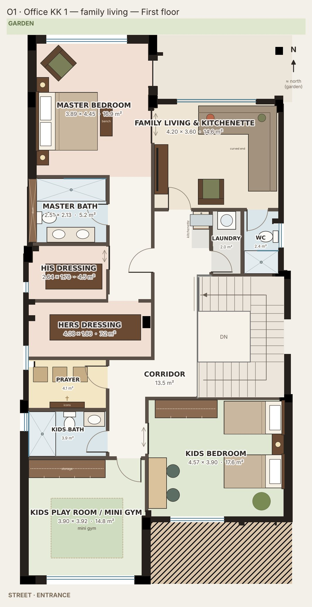
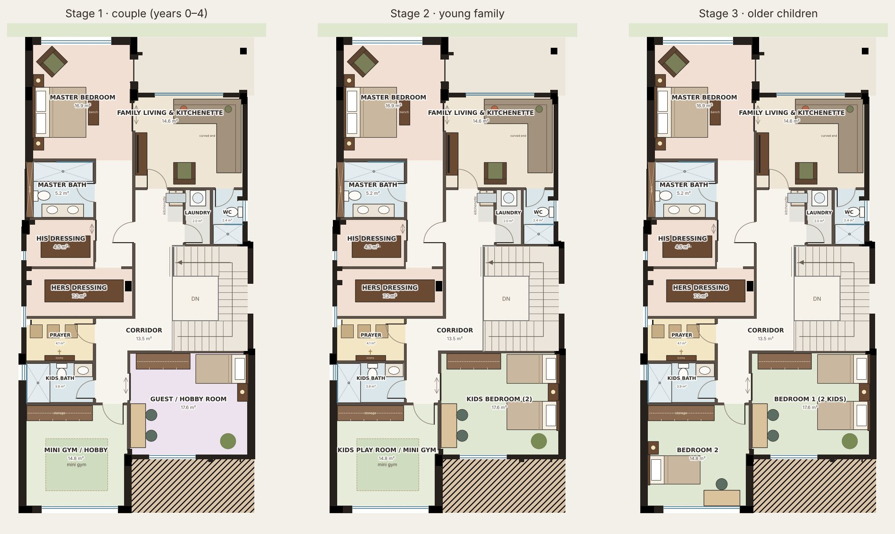
Ground floor: same as H2 · Kids bedroom 8.8 m²/child · Kids play room / mini gym 14.8 m²/child
The idea
- A true suite: one door off the landing leads into a private suite hall that serves the bedroom, the master bath and both dressings — nothing of the parents' is reached from the corridor.
- His and hers as two separate closed dressings stacked in the west bay, each with a 0.85 m centre island; hers runs the full width of the house to the corridor wall.
- Upstairs family living and kitchenette in the east garden room with a big curved L-sofa facing a wall TV, the terrace slider beside it and its own WC + shower.
- Service in one compact block at the top of the stair: kitchenette niche, laundry and the living's shower room side by side on stack E1.
- Kids wing on the street side: a 4.5 m double bedroom with twin 1.1 m beds sharing a nightstand, a 3.84 × 3.83 m play room / mini gym and a kids bath between them.
Score
Office first floor redrawn in the engine (ground = H4); blind average of three reviewers 51.1. Closed suite with separate his and hers, wet rooms on the stacks; but the dressings are islands with 4.6 m of hanging, the living's WC is blocked by the sofa, two children share 17.6 m² and the kids bath is only off the corridor.
Movement in and out of every room
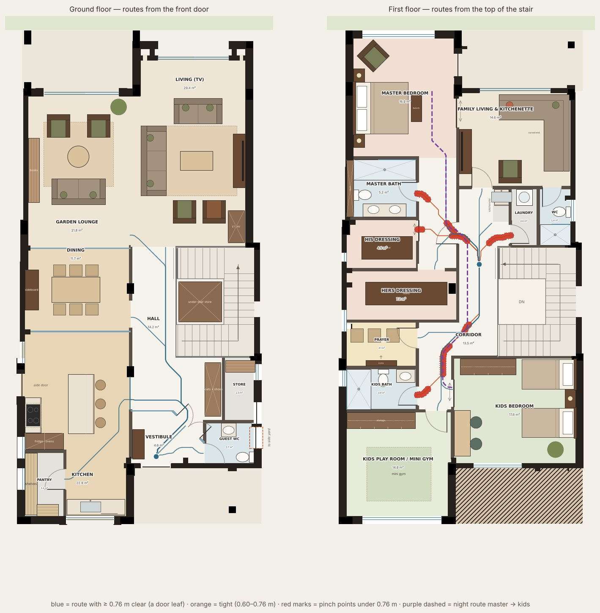
- night route: master bed → kids room: 12.3 m
- stair → laundry: 1.9 m
- bed → shower: 4.0 m
Open points: first: only 19 % of Hers dressing's free floor is reachable (furniture blocks part of it); first: WC + shower cannot be reached with 0.60 m clear
Notes for the architects
- Ground floor is H4's, copied verbatim: the office only drew the first floor, so every office concept shares the studio's ground floor and comparisons are about the first floor only.
- Middle partition line taken at X −101.0 for the master / living wall, the suite hall, hers and the landing (the office draws it ≈0.2 m east of the column line); the middle column at Y −1.3 therefore stands inside hers' east wall, as drawn.
- The office's 2.31 m master bath sits behind a ≈0.26 m plumbing duct on the west wall; the duct is drawn as a box. The bath is at Y 1.3…3.55, 2.3–4.5 m north of stack W1, so it needs a new stack in that west-wall duct (allowed: not on the front).
- The 0.80 m band between the two dressing islands is read as the dividing wall (Y −0.60) plus aisles; that leaves only ≈0.33 m (his) and ≈0.40 m (hers) between each island and the dividing wall — the office's own dimensions.
- Hers' island is drawn running into the middle column; shortened by ≈0.05 m to stop at the column face.
- His sliding door is on the suite-hall wall beside the island's east end (0.12 m from the wall); it is placed on the 0.6 m walkway, which is the only way in.
- Master bedroom ↔ family living: the office draws a ≈1.1 m sliding door in the shared wall, so the living can also be reached through the bedroom.
- Kitchenette is a 0.6 m × 1.2 m niche off the landing (one 0.6 m sink unit); laundry 0.93 m clear with one washer; the living's WC/shower (1.20 m) has no basin drawn.
- Prayer room door (hinged into the room) sweeps close to the third chair, as drawn.
- Living door moved ≈0.15 m east of where it is drawn so its leaf clears the wall TV unit (as drawn the open leaf hits the TV).
- Clash as drawn: the end of the L-sofa's east leg stops ≈0.53 m from the wall right in front of the living's WC/shower door, so the WC is reached through a squeeze (movement check flags it).
- Clash as drawn: hers' 0.85 m island leaves ≈0.40 m to the dividing wall and stops at the middle column, so only the strip under the suite-hall opening is reachable (movement check flags it); his island leaves ≈0.33 m on its south side.
- Stage 3: no walls move — the office's play room / mini gym takes a 1.1 m bed, nightstand and desk and becomes bedroom 2; the double bedroom keeps both children.
O2 Office KK 2 — island dressing
The office's KK 2: a walk-in dressing with a central island under a curved wall, the master opening into a garden lounge, and a family lounge on the landing.
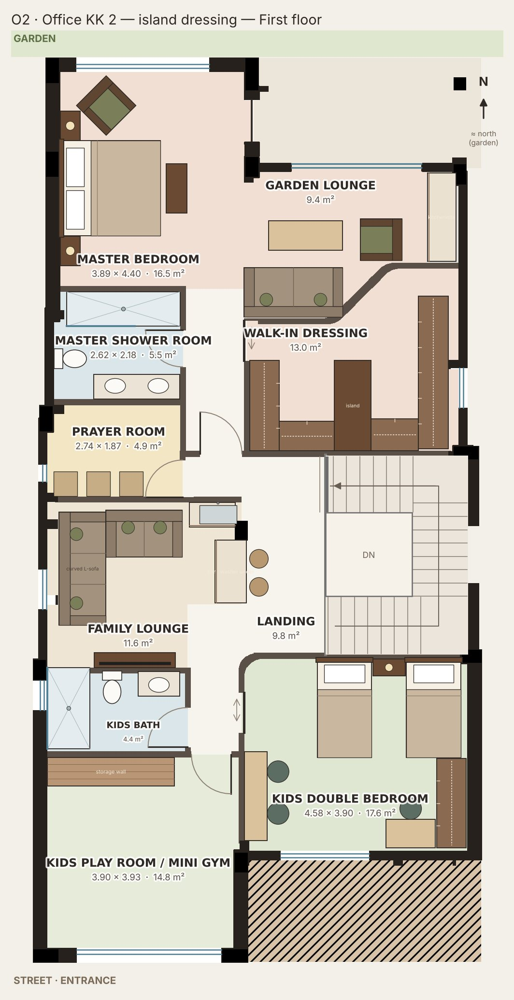
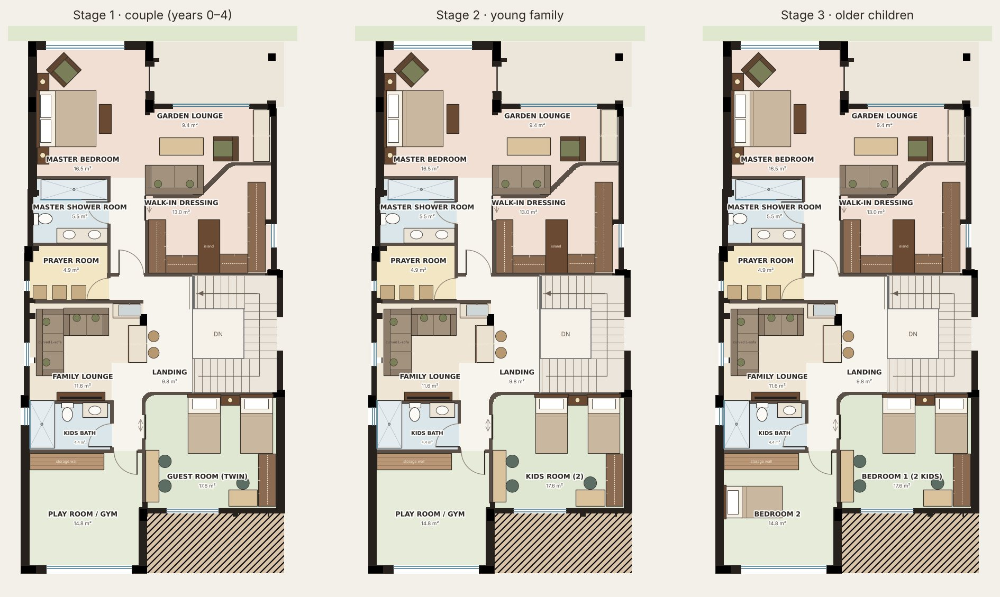
Ground floor: same as H2 · Kids double bedroom 8.8 m²/child · Kids play room / mini gym 14.8 m²/child
The idea
- A generous shared walk-in dressing (about 4.2 x 2.7 m plus the flared top) with a double-sided island and wardrobes on three walls, entered by a sliding door from the master passage.
- The dressing's top wall curves and turns at 45 degrees, so the garden lounge above it gets a sofa nook that hugs the curve and the room still reads as one with the bedroom.
- Master suite behind one door off the landing: a 1.2 m passage leads to the bedroom, the shower room (2.3 m walk-in shower, double basin) and the dressing; bedroom and garden lounge flow into each other, with a kitchenette run on the east wall and the terrace door.
- The landing becomes a family lounge: a curved L-sofa facing a TV wall and a curved bar with a round basin and two stools at the top of the stair.
- Kids wing kept simple: a 4.4 x 3.9 double room with twin 1.1 m beds and a shared nightstand, a 3.8 x 3.9 play room / mini gym with a storage wall, and a kids bath with walk-in shower.
Score
Office first floor redrawn in the engine (ground = H4); blind average of three reviewers 56.3. One suite door, a 13 m² walk-in dressing and a curved wall that feels designed, 13 % circulation; but only one washer under the bar, no closed his, the garden lounge only through the bedroom, and a second lounge on the landing.
Movement in and out of every room
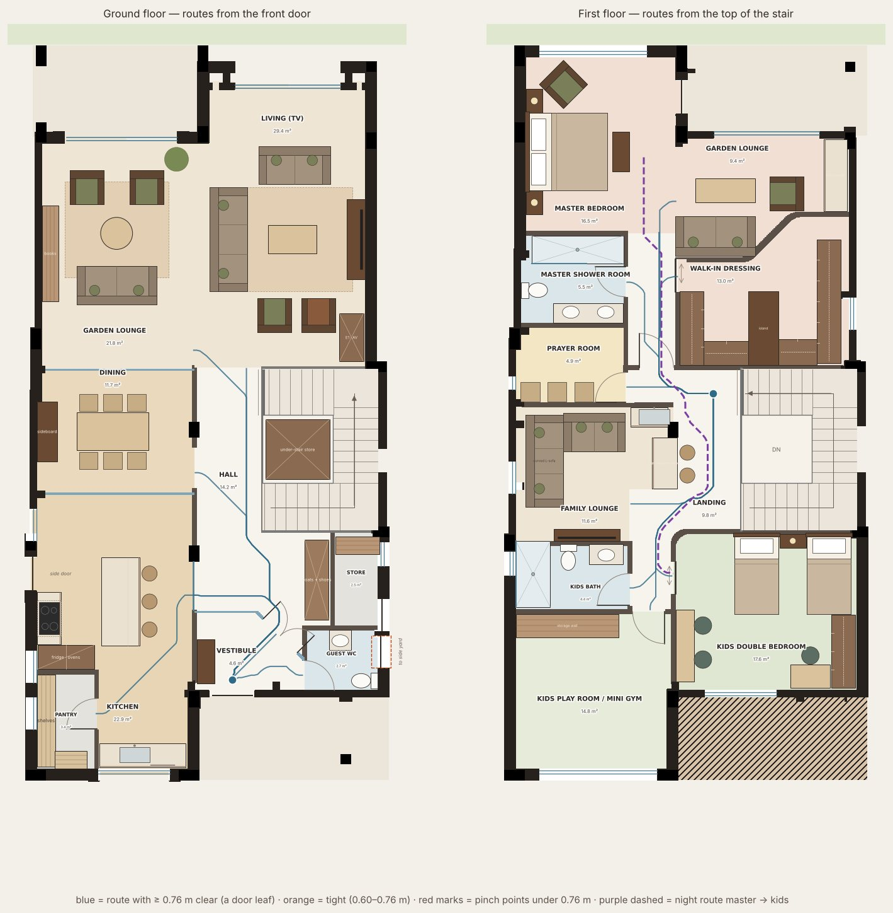
- night route: master bed → kids room: 11.9 m
- bed → shower: 3.3 m
Open points: first: to reach Garden lounge you pass through Master bedroom
Notes for the architects
- Ground floor is H4's, copied verbatim: the office drew only the first floor.
- Read off the office's PNG (O2_kk-2_island-dressing.png) at about 108.7 px/m, calibrated on the west and east column lines and the stair; positions are +-0.1 m.
- Adjustments to fit the shell: dressing, lounge and passage walls set on X -101.1 (drawn about -101.05); family lounge / landing boundary on the column line X -101.2 (drawn -101.1); double kids room north wall on the stair edge Y -3.85 (drawn about -3.70, the drawing's stair is 0.15 m short); kids room curved corner drawn as one arc r 0.35 at the column.
- Curved and stepped furniture is drawn as rectangles: the curved L-sofa as two straight sofas meeting at the corner, the garden-lounge sofa shortened to 2.0 m (drawn 2.5 m with a stepped end) so it clears the 45-degree wall; the organic coffee table as a 1.5 x 0.6 rectangle.
- The dressing's double-sided island is drawn as one 0.75 x 1.84 block attached to the south wardrobes (the drawing ties it to the south wall: a peninsula, not a free island).
- East facade beside the dressing is thicker than drawn (inside face about X -97.0 at Y 0.3-2.2): the east wardrobe moves 0.15 m west, the right-hand aisle is 0.96 m instead of about 1.1 m.
- Laundry: a washing machine under the bar counter at the top of the stair (the office's washer symbol, the same as KK 1's laundry). No dryer or linen space is drawn.
- No icon wall is drawn in the prayer room (three chairs facing north only); left as drawn.
- Master bath: the drawing shows a WC under a west window at Y about 2.0-2.6, where the facade has no opening; it needs a new side window (compound approval) or mechanical extract.
- Problems seen, not fixed: one shared dressing (no separate his closed room, Daniel 2026-10-19); the garden lounge is open to the bedroom, so it cannot become a stage-3 bedroom; the kids bath is reached only from the corridor (no doors from the kids rooms); the route to the kids rooms passes along the family lounge in front of the TV; the dressing is dead-ended at the 45-degree wall top-right.
O3 Office KK 3 — master on the terrace
The office's KK 3: the master bedroom moves to the east garden room and opens onto the terrace; the west garden room becomes a sitting room.
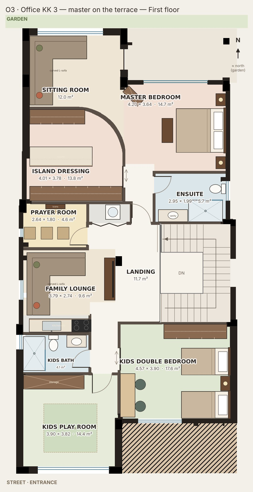
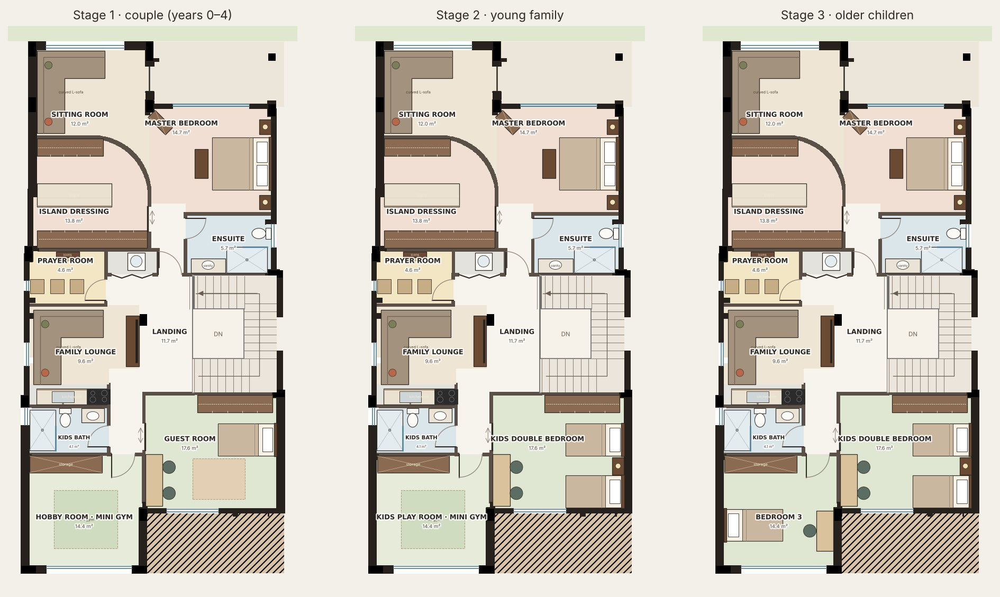
Ground floor: same as H2 · Kids double bedroom 8.8 m²/child · Kids play room 14.4 m²/child
The idea
- Master bedroom in the east garden room (3.64 m deep), bed on the east wall facing the terrace slider, its own ensuite on the E1 stack right behind it.
- West garden room becomes a sitting room with a curved L-sofa and its own door to the terrace: a parents' retreat that flows into the bedroom around a curved wall.
- One large island dressing (3.80 m deep) between the two: wardrobes on three sides and a centre island, behind a curved wall and a sliding door.
- The landing earns its floor: a family lounge with a curved L-sofa and a TV wall, a kitchenette counter beside it, a washer nook at the stair top.
- Kids wing: double bedroom on the east with two 1.1 m beds and a shared nightstand, a play room / mini gym on the west, one kids bath off the corridor.
Score
Office first floor redrawn in the engine (ground = H4); blind average of three reviewers 51.9. Master wakes onto the terrace with its ensuite on the stack, 12.5 % circulation; but the bedroom is the smallest (14.7 m²), the sitting room is only through it, and the suite door, washer and family lounge crowd the stair top.
Movement in and out of every room
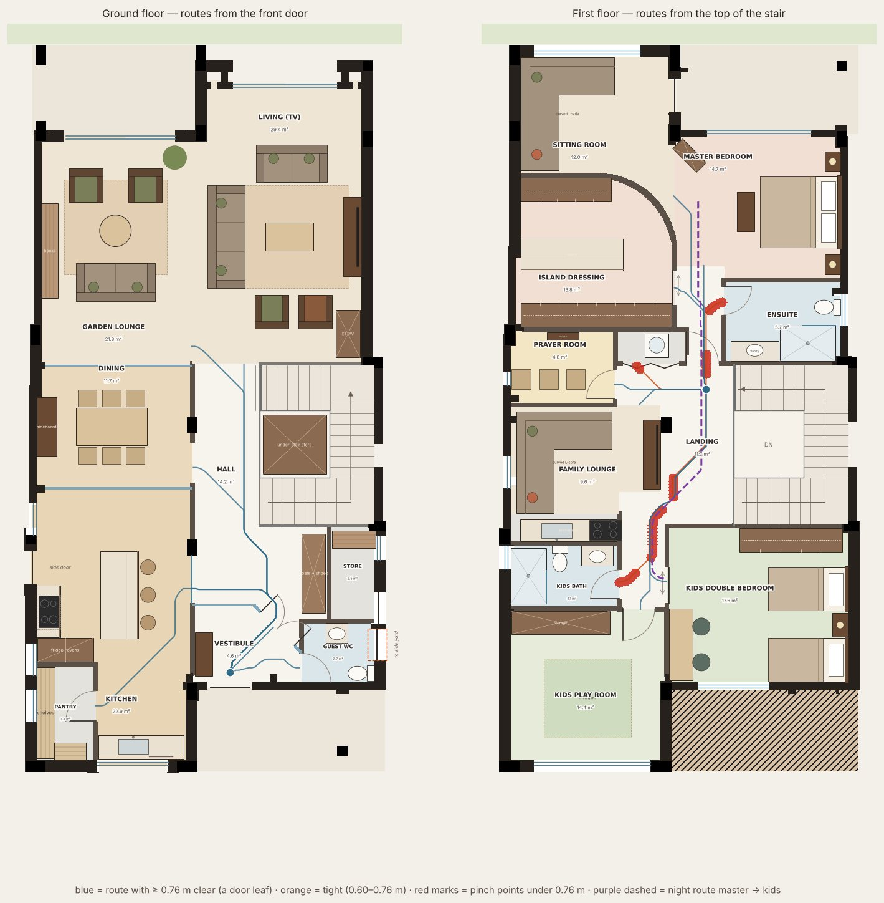
- night route: master bed → kids room: 10.3 m
- stair → laundry: 2.1 m
Open points: first: to reach Sitting room you pass through Master bedroom
Notes for the architects
- Ground floor is H4's, copied verbatim, so the office concepts are compared on the first floor only.
- Calibrated from the office drawing with the stair (X -99.50…-96.55, Y -3.85…0.25), the columns and the written dimensions; positions within ±0.1 m unless listed here.
- Master terrace access uses the existing lounge slider at Y 6.10 (X -100.18…-97.55); the office draws curtains on that line, no new opening. The sitting room uses the existing west-room terrace door at X -101.0.
- The office's wedge-shaped planter / niche in the bedroom's north-west corner is drawn as a 45° low built-in (0.85 × 0.35); exact shape is decorative.
- Dressing curve: the office draws horizontal → 45° → vertical with rounded knees; drawn here as one arc r 2.0 m (centre -103.0, 3.0). The top wardrobe is trimmed to 1.9 m so it stays inside the curve.
- Lobby/bedroom line set at Y 2.70 west of the ensuite (the ensuite's north wall is at Y 2.35) so the dressing's sliding door (Y 1.75…2.60, as drawn) sits on a lobby wall.
- Kitchenette is the office's counter (sink + hob) on the kids-bath wall, open to the family lounge; kitchenette room drawn 0.75 deep (counter + 0.2) so the lounge floor in front of it stays lounge.
- Prayer room: the office draws three chairs facing the north wall; the icon wall on that north wall is added here (not drawn by the office) to make it the Christian prayer room of the brief.
- Laundry: the office draws ONE washer in a 1.8 × 0.8 nook at the stair top behind a folding door; no dryer, no linen, no ironing space.
- Problem (not fixed): there is no separate his and hers dressing and no closed his room; the island dressing is one shared walk-in (Daniel 2026-10-19 asks for his as a closed room).
- Problem (not fixed): the sitting room is reached only through the master bedroom (it is part of the suite), so it cannot become a child's bedroom at stage 3; stage 3 uses the play room as the third bedroom instead.
- Problem (not fixed): the way to the kids wing runs down the landing past the family lounge; the master bedroom has no wardrobe of its own and no TV / dresser wall.
- Problem (not fixed): the master ensuite and the master door both sit at the stair top, so the master suite entrance is 1 m from the laundry nook and the family lounge.
O4 Office Angles 1 — diagonal dressing
A 45° passage cuts through the master wing between two angled walk-in dressings; family living, kitchenette, laundry and WC share the east-garden bay.
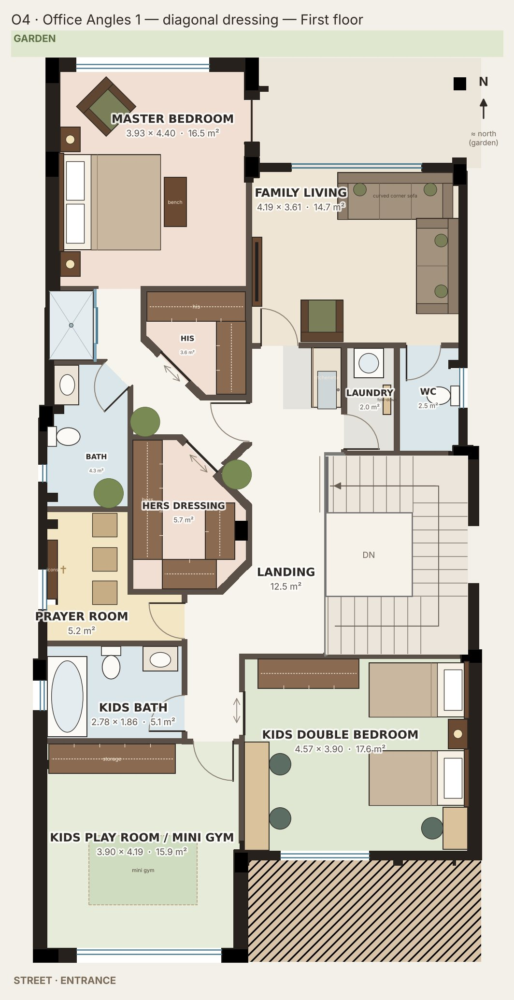
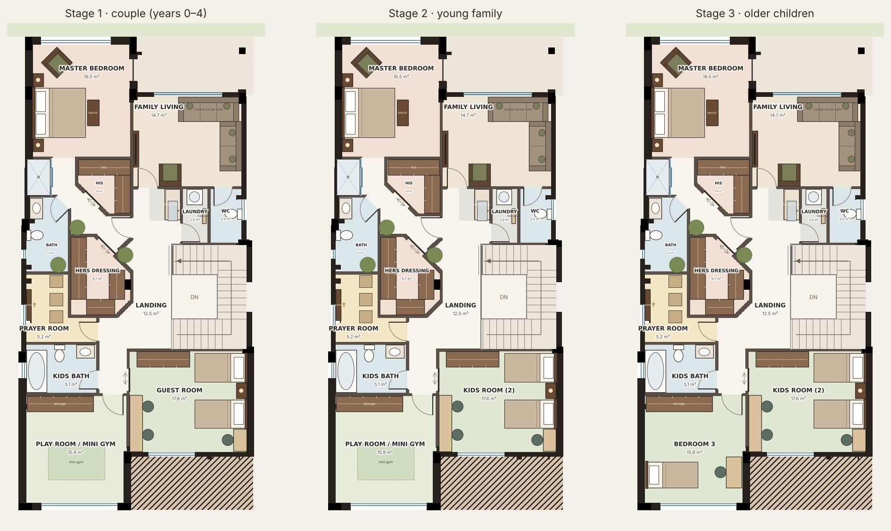
Ground floor: same as H2 · Kids double bedroom 8.8 m²/child · Kids play room / mini gym 15.9 m²/child
The idea
- The master suite is entered on a diagonal: one door off the landing leads into a 45° passage that turns toward the bed, past both dressings and the bath, so the bedroom stays out of sight from the stair.
- Two walk-in dressings, each a closed room with a sliding door on its angled face: his is the 2.0 × 2.0 m core with an L of hanging, hers below it is larger, with wardrobes on three sides.
- Round display niches fill the corners left over by the angles, one in the suite passage and one facing the top of the stair.
- Family living with a curved corner sofa takes the east-garden bay; kitchenette, laundry and a WC are lined up behind it on the east wet zone.
- Kids wing on the street side: a twin room with 1.1 m beds, a shared nightstand and two desks, a 4.1 m play room / mini gym, a family bath with a full tub, and a prayer room on the west wall.
Score
Office first floor redrawn in the engine (ground = H4); blind average of three reviewers 53.9. The angles make closed his and hers and hide the bed from the stair; but the suite passage is 0.8 m with two turns, the WC is through the family living, and the angled pods cost more to build.
Movement in and out of every room
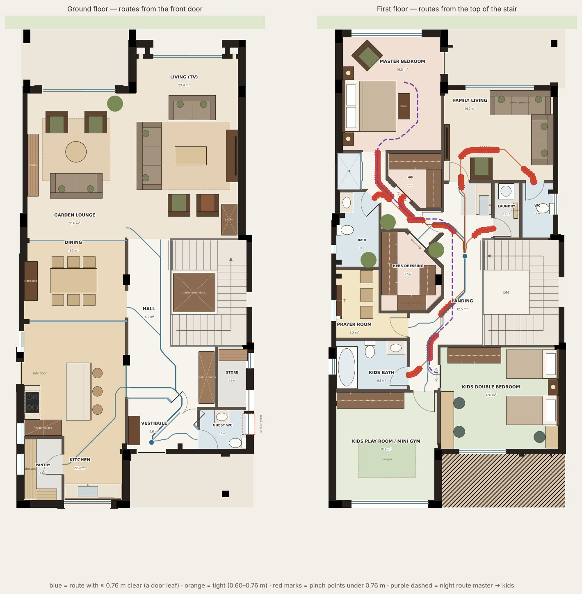
- night route: master bed → kids room: 14.9 m
- stair → laundry: 1.8 m
- bed → shower: 5.8 m
Open points: first: the way into Master bedroom narrows below 0.76 m (a door leaf); first: to reach WC you pass through Family living
Notes for the architects
- Ground floor is H4's, copied verbatim, so the office concepts are compared on the first floor only.
- Drawn from docs/architect/office-proposals-2026-10-19/O4_angles-1_diagonal-dressing.png, scale taken from the 3.84 / 4.12 / 1.99 / 2.04 dimensions (≈104 px/m), anchored on the facade inside faces and the middle-line columns; positions ±0.1 m.
- His / hers: the drawing does not label the two dressings; the larger lower one is taken as hers (Daniel's rule hers > his).
- Master bath: the oval in a rounded counter is the office's basin symbol (same as in the kids bath), so the master bath has basin + WC and no tub; the shower is the cubicle with the rain head north of it, which opens only onto the suite passage (glass door added; the drawing shows a glass line and no door).
- A dark blob in the south part of the master bath is read as a plant; the half-partition beside it is not drawn.
- A sliding element drawn on the bedroom face of the bedroom / family-living wall (Y ≈ 4.2–5.2) is read as a sliding TV / art panel, not a door: the rooms are not connected.
- Small adjustments vs the drawing: living TV shortened to 1.4 m and moved 0.3 m north so the living door can swing; the curved corner sofa is drawn as two straight runs (the engine has no curved sofa), its east leg 0.85 deep and ending 0.1 m further north so the WC door can be walked to; master basin shortened 1.0 → 0.8 m to clear the west column at Y 1.0; the kitchenette room boundary includes the 0.3 m standing strip in front of the counter (open to the landing, no wall moved). Otherwise every wall, door and piece follows the drawing.
- Suite passage: the 45° passage is about 0.8 m clear between its walls and turns twice, so it reads as tight (movement check: narrower than a door leaf on the way to the bedroom). This is the office's real width.
- The WC beside the laundry has no basin in the drawing (none added). Its door opens off the family living, so guests on the first floor go through the living to it.
- Laundry door: the leaf hinges at the south and opens off a 0.65 m pocket between the kitchenette counter and the stair head; the drawing shows one washer and a fold-down ironing board, no dryer.
- The middle column at Y −1.3 stands in hers' east wall; the east wardrobe is set in front of it, so hers' central aisle is 0.87 m (drawing ≈ 0.95 m).
- The prayer room's icon wall is on the west facade wall with three chairs facing it; the door is from the corridor in its south-east leg.
- Stage 3 (three children) follows the office's own logic without moving walls: the twin room keeps two children, the play room / mini gym becomes the third bedroom.
O5 Office Angles 2 — curved prayer room
The office's Angles 2: a prayer room closed by one sweeping arc, a corridor that kinks at 45°, and a dressing hall of two chamfered wardrobe rooms.
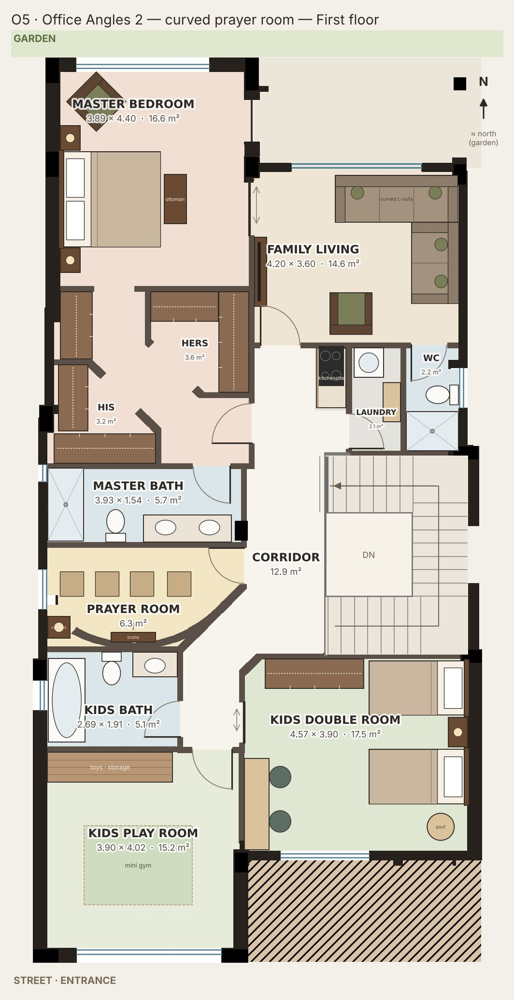
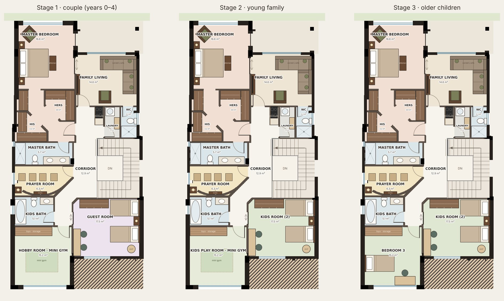
Ground floor: same as H2 · Kids double room 8.8 m²/child · Kids play room 15.2 m²/child
The idea
- Prayer room as a small chapel: four seats in a row face a sweeping curved apse wall that spans the whole west bay, with a candle stand set into the curve at its west end; the curve meets the corridor's 45° wall tangentially, so the room reads as one soft shape.
- The corridor kinks at 45° past the prayer room, which eases the turn from the landing towards the kids bath and play room.
- Master suite behind one door off the landing: a lobby opens to a full-width shower room (walk-in shower, WC, double basin) and, through a diagonal, to a dressing hall with two L-shaped wardrobe rooms (1.99 × 2.04 and 2.06 × 2.00) chamfered at 45° towards each other.
- Master bedroom over the whole west garden bay, 4.35 m deep, king bed on the west wall, its own terrace door, and a sliding door straight into the family living.
- Family upstairs: an east-garden family living with a big curved L-sofa and a WC/shower, kitchenette and laundry at its door; a kids double room with two 1.1 m beds and a shared nightstand, and a play room / mini gym over the street.
Score
Office first floor redrawn in the engine (ground = H4); blind average of three reviewers 54.7. The best prayer room of the five (arc apse, four seats) and a generous master bath; but the master bedroom can be entered through the family living, the dressings are open alcoves, and the kids bath is only off the corridor.
Movement in and out of every room
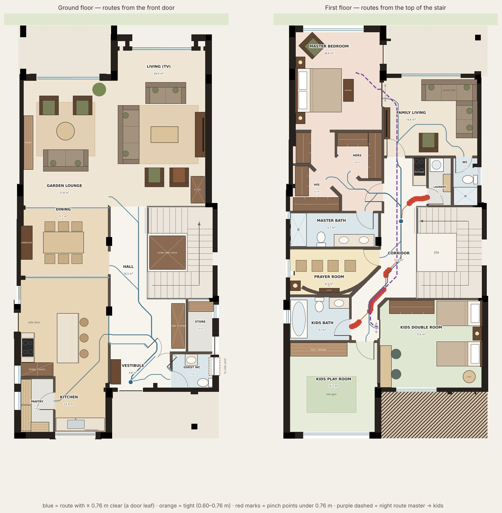
- night route: master bed → kids room: 13.0 m
- stair → laundry: 1.9 m
- bed → shower: 7.9 m
Open points: first: to reach Master bedroom you pass through Family living; first: Candle niche behind the apse cannot be reached with 0.60 m clear; first: to reach WC / shower you pass through Family living
Notes for the architects
- Ground floor is H4's, copied verbatim, so the office concepts compare on the first floor only.
- Read off the office drawing (O5_angles-2_curved-prayer.png), calibrated on the columns and the stair; positions ± 0.1 m. Where the drawing's written dimensions and the real shell differ, the written room dimensions were kept and anchored to the real walls.
- Master bath as drawn: full west-bay strip ≈ 3.9 × 1.5 with a walk-in shower (no glass) at the west wall, WC and a double-basin vanity. The drawing shows no tub in the master bath (the tub is in the kids bath).
- The two dressing rooms are not labelled his / hers in the drawing; the studio calls the larger one (A, by the bedroom, ≈ 3.6 m² vs 3.2 m²) hers and B (by the bath) his. Both are open alcoves off the dressing hall, so neither is a closed room (Daniel 19 Oct asks for his to be closed).
- Dressing hall: you walk through it to reach the bed from the suite door; the office drew it as open floor between the two wardrobe rooms.
- Residual floor behind the prayer apse (≈ 0.4 m² between the curve, the kids bath wall and the 45° corridor wall): reachable only through the gap where the candle stand sits in the curve. Drawn as a candle niche; in practice it is a void.
- Icons: the office drew no icon wall; a 0.9 m icon panel is placed on the apse facing the seats (brief: Christian prayer room, icon wall, candles).
- Kids bath is reached only from the corridor (no doors from the kids rooms), as drawn.
- Family living is outside the master suite and opens to the corridor; the brief says an upstairs family living is not needed. It is joined to the master bedroom by a 1.1 m sliding door, so the master bedroom has a second way in from a shared room.
- L-sofa: as drawn, its east leg stops ≈ 0.6 m short of the WC door, which blocks the way into the WC; the leg is drawn 0.2 m shorter (to Y 3.30) so the WC door has 0.78 m clear. The curved ends are drawn square (engine has no curved sofa).
- Living door opens against the wall-mounted TV unit in the drawing; the TV is drawn slightly shorter (1.4 m) so the leaf clears it.
- Lounge armchair turned to face the sofa (the drawing's chair reads as facing the south wall).
- Stage 3 (office logic, no walls moved): the two children stay in the double room; the play room / mini gym becomes the third child's bedroom; the family living stays a living.
Ideas only — not for building
These keep the kids bathroom in the middle of the floor, away from any outside wall and drain, which you ruled out on 19 Oct. They stay here for the ideas in the rest of their floors.
Ideas only: kids bathroom in the middle of the floor — not buildable; kept for the ideas in the rest of the floor.
H4 H2 + the office's ideas
H2 unchanged downstairs; upstairs the four ideas worth taking from the office's five drawings, inside H2's equal thirds.
grew from H2 + O1, O2, O5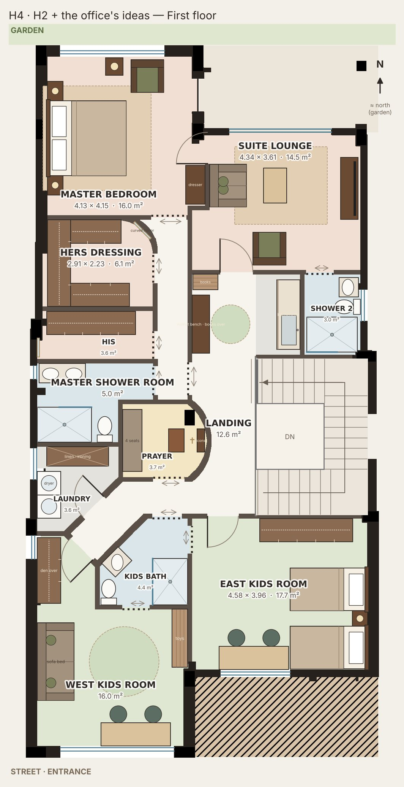
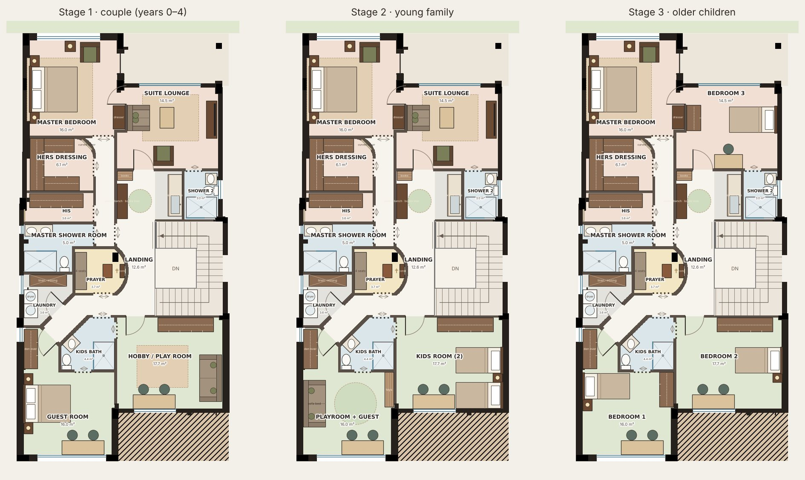
Ground floor: same as H2 · West kids room 16.0 m²/child · East kids room 17.7 m²/child · Suite lounge 14.5 m²/child
The idea
- Landing that earns its floor: a built-in walnut bench with a bookcase over it and a reading rug beside the stair, a family / kids' reading nook on space the house has to give to circulation anyway.
- Hers grows into a 3-wall walk-in with a curved end wall: about 5 m of wardrobe on three walls (H2: 3.6 m) and a curved full-height mirror; the curve flares the suite hall into a small round lobby at the bedroom door.
- Prayer room with a sweeping apse: the whole landing-side wall is one arc, the icon wall sits in it on the east, a 4-seat pew faces it, with a pocket door off the corridor.
- East kids room: twin 1.1 m beds with a shared nightstand on the east wall (the office's upgrade over 1.0 m); 1.1 m beds also for the stage-3 bedrooms.
- Everything else is H2: one suite door, his as a closed room, shower room on W1, suite lounge with its own shower and lockable landing door, Jack-and-Jill kids bath, kitchenette, laundry.
What it takes from where
- Ground floor and the first-floor frame: H2 (T1-R3 ground + T2-B equal thirds), unchanged.
- Living landing: O2 / O3 (KK 2 and KK 3) family lounge on the landing, taken as a built-in bench + bookcase, no extra room.
- Curved-wall hers: O2 / O3 island dressings. The full island did not fit (see notes); the curved end wall and the larger walk-in did.
- Apse prayer room: O5 (Angles 2) arc on the corridor side, combined with the studio east icon wall.
- 1.1 m twin beds with a shared nightstand: all five office drawings (O1-O5).
Score
H2 plus the office ideas: a reading nook on the landing, a larger hers with a curved wall and 5 m of hanging, a curved prayer apse with four seats, 1.1 m kids beds; the middle column stands in the apse (clad it as a niche).
Movement in and out of every room
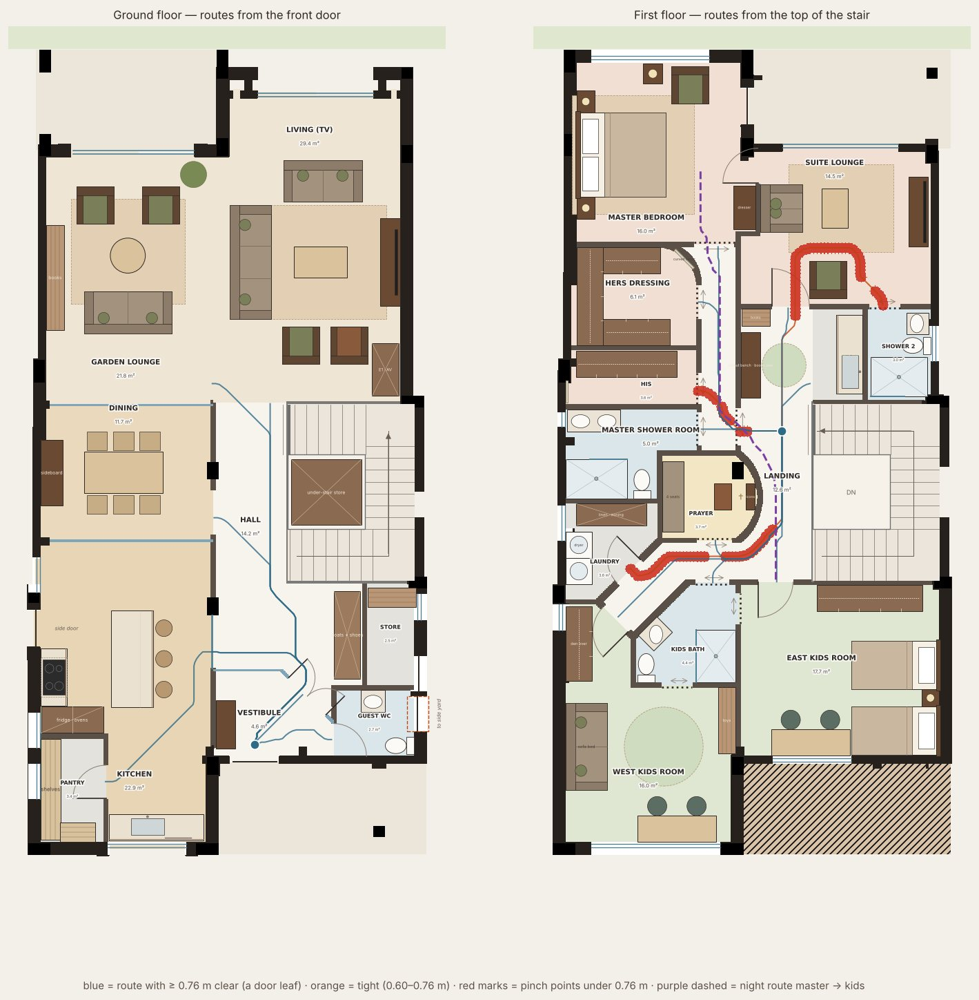
- night route: master bed → kids room: 10.2 m
- stair → laundry: 6.1 m
- bed → shower: 6.2 m
Every first-floor room reached with a door-width path; no room crossed to reach another.
Notes for the architects
- Kids bath: WC on the west side of the wedge; its waste runs ≈1.5 m west under the raised floor of the west room's wardrobe nib to stack W2 (or drops in a new chase in the kitchen/vestibule wall, kept > 1 m from the middle columns).
- Laundry and kids bath extract to the west side facade; the laundry already has the side window at Y −2.9…−2.1.
- The high west window at Y −4.95…−4.35 sits above the 2.1 m wardrobe in the west room's nib and lights the crawl den over it.
- Den over the nib wardrobe: 1.0 m clear (3.2 m − 2.1 m wardrobe − deck), ladder rungs inside the wardrobe end; build the deck as joinery, no structure.
- Compound request: guest WC east window (Y -7.20…-6.60) becomes a door Y -7.25…-6.45.
- Why no island in hers: a 0.9 x 1.2 island with 0.9 m aisles all round plus wardrobes needs about 3.3 x 3.3 m clear; the west bay gives 2.98 m, and taking more depth would push the master bedroom below 16 m2 or delete his room.
- Master bedroom wall moves 0.45 m north (Y 3.85) to give hers its depth; the bedroom takes back 0.45 m of the lounge's west edge beside the bed foot (X -101.2 to -100.75) to stay at 16 m2; the lounge keeps about 14.5 m2.
- Prayer apse: one arc r 1.25 m, chord 2.0 m, 0.5 m deep into the landing (same depth as H2's small apse), so the landing keeps 1.15 m beside it; the middle column at Y -1.3 stands in the apse beside the icon wall (clad it as a niche).
Ideas only: kids bathroom in the middle of the floor — not buildable; kept for the ideas in the rest of the floor.
H2 Your master downstairs · Equal thirds upstairs
The calmest hybrid: your master plan's ground floor as developed in round 3, under the equal-thirds first floor.
grew from T1-R3 + T2-B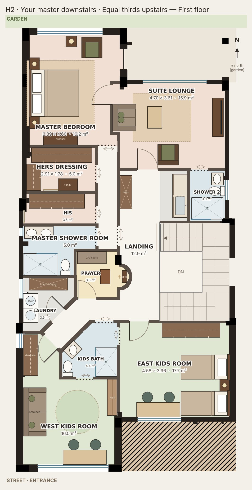
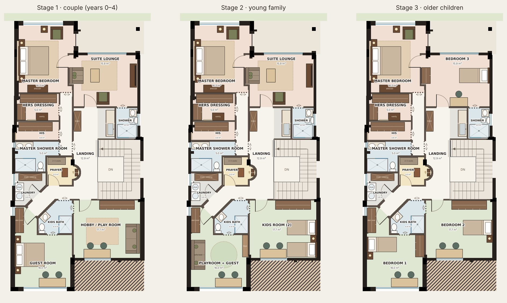
Ground floor: its own · West kids room 16.0 m²/child · East kids room 17.7 m²/child · Suite lounge 15.9 m²/child
The idea
- Ground floor = Track 1 round 3: kitchen with the street window and a 3-stool island, 45° glass vestibule, TV living + garden lounge, dining between the movable glass walls, under-stair store.
- Your guest WC idea built in: an inside door from the vestibule and an outside door to the side yard for garden days.
- First floor = T2-B Equal thirds (round 2): one suite door, his and hers as two closed dressing rooms, walk-in shower room on the W1 stack, king bedroom.
- A 45° kids' gallery and a Jack-and-Jill bath with a door from each kids room: at stage 3 every child has ≈ 16–18 m² and their own bathroom door, the suite lounge included.
- Least building risk of the hybrids downstairs (it is your drawing, developed); one off-stack drain upstairs to confirm on site.
What it takes from where
- Ground: T1-R3 (master developed, round 3) + the guest-WC outside door from T1-R2W.
- First: T2-B Equal thirds, round 2 (closed his dressing, movement fixes).
Score
Your master ground floor (round 3) with the garden-access guest WC, under the equal-thirds first floor: the calmest, cheapest hybrid with the best child equity.
Movement in and out of every room
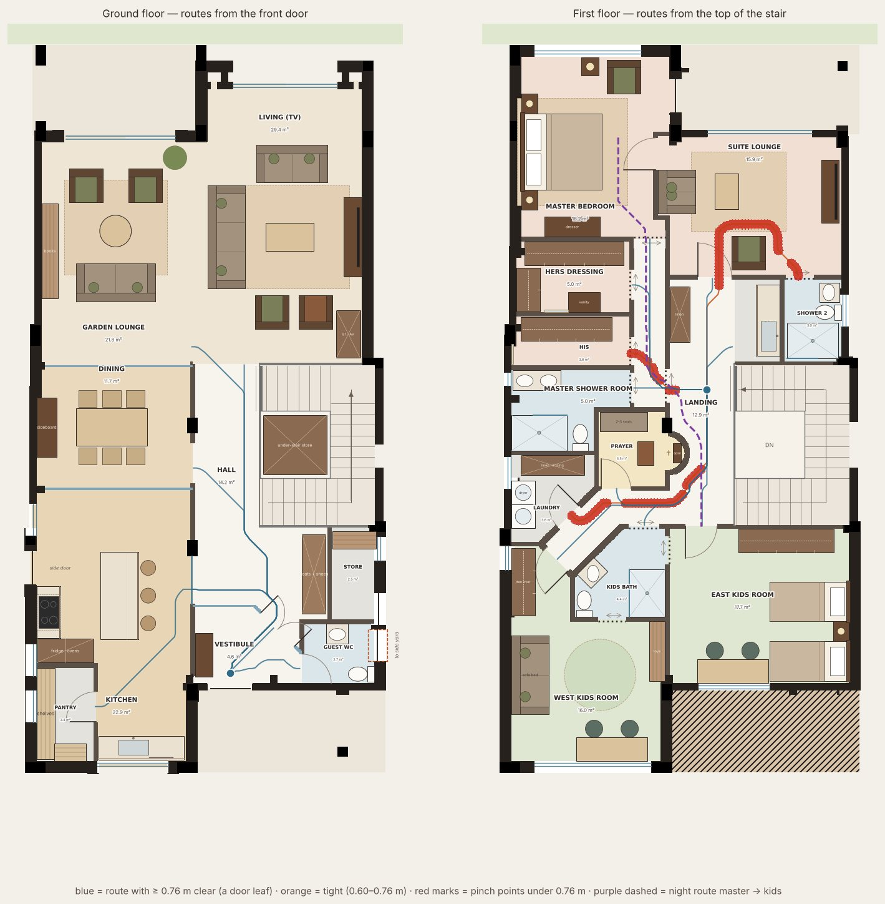
- night route: master bed → kids room: 10.7 m
- stair → laundry: 6.1 m
- bed → shower: 6.8 m
Every first-floor room reached with a door-width path; no room crossed to reach another.
Notes for the architects
- Kids bath: WC on the west side of the wedge; its waste runs ≈1.5 m west under the raised floor of the west room's wardrobe nib to stack W2 (or drops in a new chase in the kitchen/vestibule wall, kept > 1 m from the middle columns).
- Laundry and kids bath extract to the west side facade; the laundry already has the side window at Y −2.9…−2.1.
- The high west window at Y −4.95…−4.35 sits above the 2.1 m wardrobe in the west room's nib and lights the crawl den over it.
- Den over the nib wardrobe: 1.0 m clear (3.2 m − 2.1 m wardrobe − deck), ladder rungs inside the wardrobe end; build the deck as joinery, no structure.
- Compound request: guest WC east window (Y -7.20…-6.60) becomes a door Y -7.25…-6.45.
Ideas only: kids bathroom in the middle of the floor — not buildable; kept for the ideas in the rest of the floor.
H3 Folded suite · equal kids
T2-D's folded walnut house downstairs and in the suite, T2-B's equal-thirds kids wing upstairs: drama for the couple, fairness for the children.
grew from T2-D + T2-B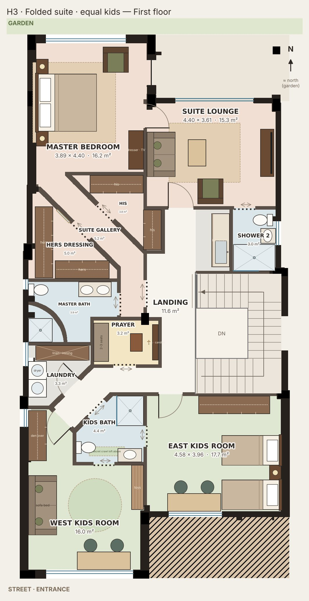
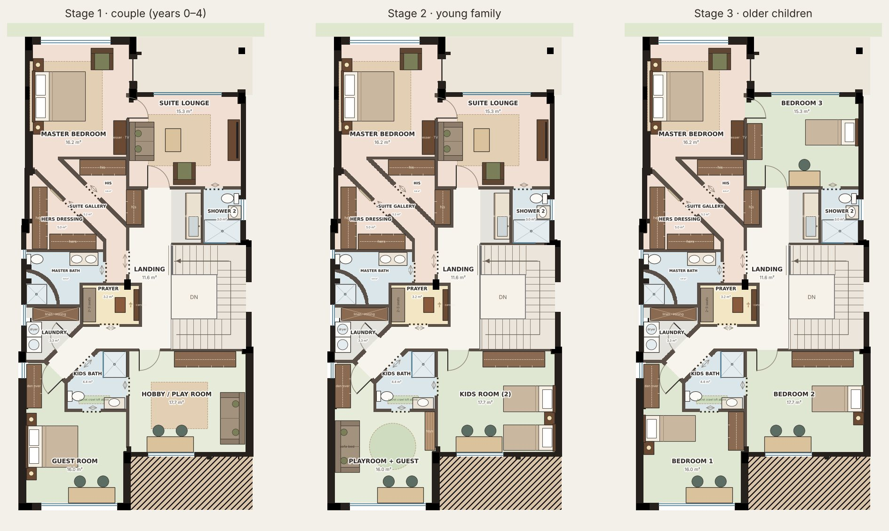
Ground floor: its own · West kids room 16.0 m²/child · East kids room 17.7 m²/child · Suite lounge 15.3 m²/child
The idea
- Front door: a curved glass vestibule frames the garden; a walnut pivot wall closes the whole kitchen, a curved half-wall wraps the round table, and the guest WC has a second door out through the garden store.
- One suite door at the top of the stair. Behind it a 45° walnut gallery folds to the bed, with pocket doors to the shower room, hers (4.2 m hanging + full mirror) and his own CLOSED dressing (3.1 m).
- Quarter-circle walk-in shower with no glass to clean, double basin and WC, all on the existing W1 stack.
- Equal thirds at stage 3: west room 16.0 m², east room 17.7 m², suite lounge 15.3 m². Each has a bathroom door inside the room, and the lounge keeps its own lockable landing door. No building work.
- Shared heart at the stair: kitchenette on the E1 wet wall, laundry with side-by-side machines, linen and a window, and a Christian prayer room with a 1.6 m icon wall facing east.
- Space out of nothing: a secret crawl loft over the kids bath joins the den over the west room's wardrobe, and suitcase lofts sit over both dressings.
What it takes from where
- Ground: all of T2-D (glass vestibule, pivot wall, curved dining wall, WC + garden store).
- Suite: T2-D's 45° fold and quarter-circle shower, re-cut so his dressing is a closed room.
- Kids wing: T2-B's 45° gallery, Jack-and-Jill bath (plus a day door) and west-room den.
- Heart: T2-B's kitchenette on E1, lounge shower and laundry; prayer room widened.
Score
The bold hybrid: T2-D curved glass vestibule, pivot kitchen wall and 45° folded walnut suite (his dressing closed), over T2-B equal kids rooms with a Jack-and-Jill bath and lofts; same off-stack kids bath check as T2-B.
Movement in and out of every room
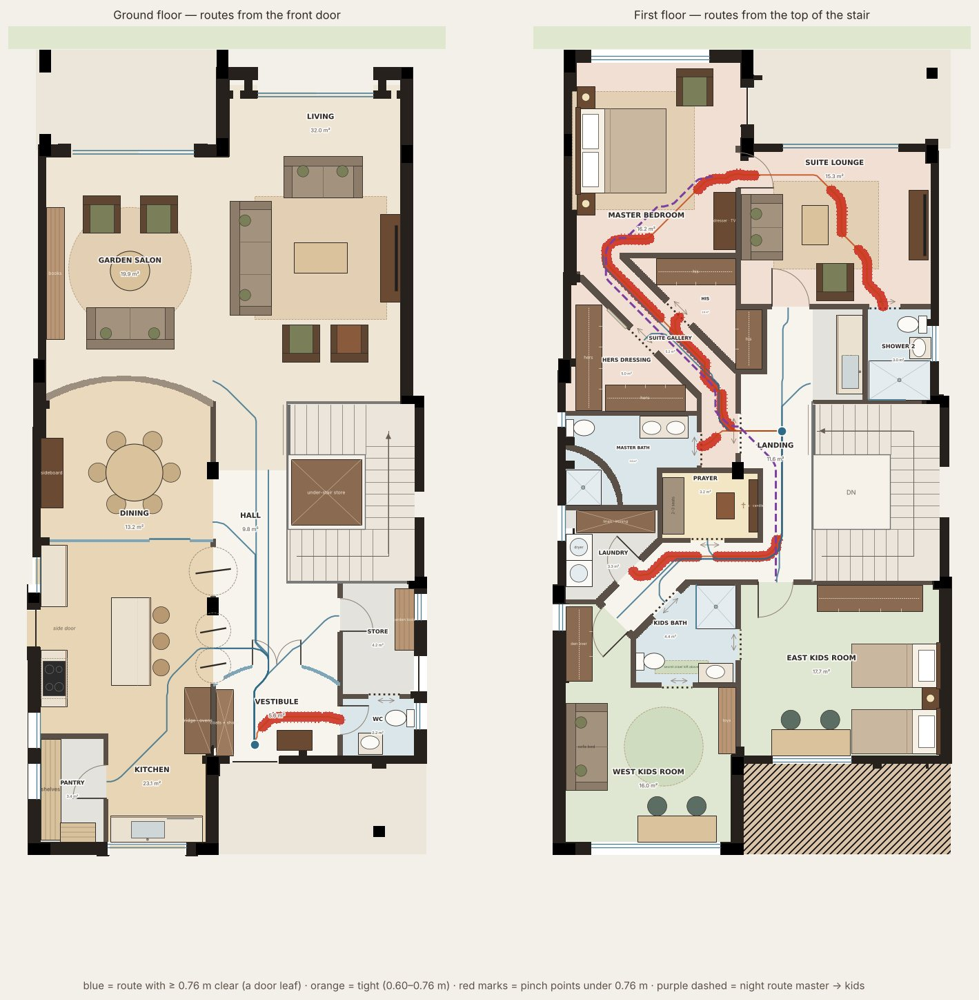
- night route: master bed → kids room: 12.5 m
- stair → laundry: 6.4 m
- bed → shower: 8.9 m
Every first-floor room reached with a door-width path; no room crossed to reach another.
Notes for the architects
- Kids bath (T2-B): WC on the west side of the wedge, waste ≈ 1.5 m west under the raised floor of the west room's wardrobe nib to stack W2 (or a new chase in the vestibule wall below, > 1 m from the middle columns). Confirm on site.
- Master shower room sits on W1 (west wall Y ≈ −1.0); kitchenette shares the lounge shower's wall on E1; laundry on the west wall between W1 and W2. No other off-stack drains.
- Kids bath ceiling at 2.2 m gives a 0.9 m crawl loft that joins the den over the west room's nib wardrobe (ladder in the wardrobe end): the secret playroom. Suitcase lofts over his and hers; AC bulkheads over the gallery and landing.
- No facade changes: every window and door stays where the developer drew it.
Ideas only: kids bathroom in the middle of the floor — not buildable; kept for the ideas in the rest of the floor.
H1 Family side · Guest side downstairs · Equal thirds upstairs
The studio's recommended pairing: two living rooms that close or join, under three equal children's rooms.
grew from T2-A + T2-B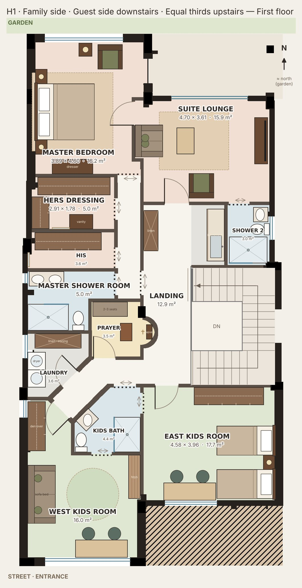

Ground floor: same as T2-A · West kids room 16.0 m²/child · East kids room 17.7 m²/child · Suite lounge 15.9 m²/child
The idea
- Ground floor = T2-A: the west bay is the family's (pantry → kitchen with island → family dining → family room on the terrace); the east bay is the guests' (vestibule, guest WC behind a 45° wall, a 45° portal, a closable 28 m² salon).
- One 4.4 m walnut folding screen on the column line: open for Christmas (one 55 m² room), closed for heavy cooking or guests.
- First floor = T2-B Equal thirds: one suite door, closed his and hers dressings, walk-in shower room, king bedroom; the suite lounge with its own shower and landing door.
- 45° kids' gallery and a Jack-and-Jill bath with a door from each kids room: every child ends with ≈ 16–18 m² and their own bathroom door.
- Every room reached with a door-width clear path; nobody crosses a bedroom to reach another.
What it takes from where
- Ground: T2-A Family side · Guest side, round 2.
- First: T2-B Equal thirds, round 2.
- The guest WC's outside door (T1-R2W) can be added on its east wall if the compound agrees.
Score
Family side / guest side downstairs with the 4.4 m walnut screen, equal thirds upstairs: the most liveable pairing, at the cost of 18 % ground-floor circulation and the off-stack kids bath.
Movement in and out of every room
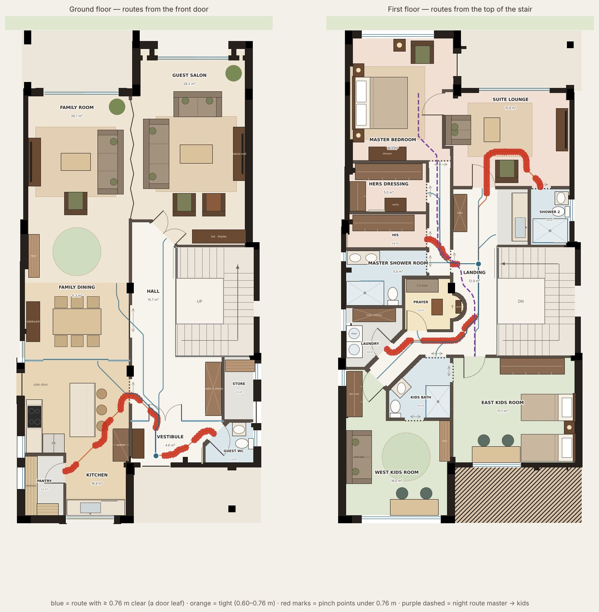
- night route: master bed → kids room: 10.7 m
- stair → laundry: 6.1 m
- bed → shower: 6.8 m
Every first-floor room reached with a door-width path; no room crossed to reach another.
Notes for the architects
- Sleep-over loft over the kids bath (2.9 × 1.9 m, 0.9 m headroom) on a timber deck; ladder in the kids lobby.
- Secret den has no window: an east-side window at Y −7.2…−6.6 (or a high vent) to be raised in the side-window negotiation.
- Laundry waste runs ≈0.8 m east to a new stack in the guest-WC wall below; extract to the east facade.
- Kids bath: WC on the west side of the wedge; its waste runs ≈1.5 m west under the raised floor of the west room's wardrobe nib to stack W2 (or drops in a new chase in the kitchen/vestibule wall, kept > 1 m from the middle columns).
- Laundry and kids bath extract to the west side facade; the laundry already has the side window at Y −2.9…−2.1.
- The high west window at Y −4.95…−4.35 sits above the 2.1 m wardrobe in the west room's nib and lights the crawl den over it.
- Den over the nib wardrobe: 1.0 m clear (3.2 m − 2.1 m wardrobe − deck), ladder rungs inside the wardrobe end; build the deck as joinery, no structure.
Ideas only: kids bathroom in the middle of the floor — not buildable; kept for the ideas in the rest of the floor.
T2-B Equal thirds
Designed backwards from three teenagers: three bedrooms of near-equal size, each with its own door into a bathroom, and nothing to rebuild on the way there.
Ground floor: its own · West kids room 16.0 m²/child · East kids room 17.7 m²/child · Suite lounge 15.9 m²/child
The idea
- Equal thirds at stage 3: west room 16.0 m², east room 17.7 m², suite lounge 15.9 m², each with a bathroom door inside the room. No child gets the short straw.
- A 45° kids' gallery peels off the landing: angled doors to the west room and laundry, and a Jack-and-Jill bath wedged into the corner it cuts, pocket door from each room plus one from the landing.
- Hotel suite behind one door: a suite hall with pocket doors to the walk-in shower room on W1, his and hers closed dressings, then the king bedroom. The lounge has its own E1 shower room and landing door: bedroom 3, no building work.
- Shared heart: prayer room with an east-facing icon apse, laundry with a window, kitchenette on the E1 wall, linen at the landing.
- Ground floor is one open loft: pantry → kitchen with 2.8 m island → round dining table → garden lounge; glass pivots close the kitchen off.
Big moves vs the master plan
- Street half: two near-equal kids rooms sharing a Jack-and-Jill bath; play lives in a kids room.
- Diagonal kids' gallery replaces the kids lobby; 1 m crawl den over the west room's wardrobe nib.
- Laundry to the west side window; prayer room with a curved apse on the landing.
- Ground: kitchen–dining–lounge open along the west bay; guest WC door on a 45° chamfer.
- Round 2 (Daniel 19 Oct): his dressing is now a closed room (3.6 m², pocket door) off a 0.9 m suite hall that runs to the bedroom; hers (5.0 m², pocket door) and the shower room (5.0 m²) also open off that hall. The shower room was replanned (shower on the W1 wall, WC, twin basin) and the bedroom/lounge corner adjusted. Movement fixes: wider 45° guest WC door; garden store marked as outside access; lounge shower door moved and WC/basin put on one wall; lounge armchair and loveseat moved; Jack-and-Jill bath gets a landing door, its shower moved to the corner and the east-room door moved.
Score
Best child equity (16.0 / 17.7 / 15.9 m², each child with a bathroom door in the room), closed his and hers off a suite hall, a 45° kids gallery; the kids bath sits off the existing stack, so its drain needs a raised-floor run or a new chase.
Movement in and out of every room
- night route: master bed → kids room: 10.7 m
- stair → laundry: 6.1 m
- bed → shower: 6.8 m
Every first-floor room reached with a door-width path; no room crossed to reach another.
Notes for the architects
- Kids bath: WC on the west side of the wedge; its waste runs ≈1.5 m west under the raised floor of the west room's wardrobe nib to stack W2 (or drops in a new chase in the kitchen/vestibule wall, kept > 1 m from the middle columns).
- Laundry and kids bath extract to the west side facade; the laundry already has the side window at Y −2.9…−2.1.
- The high west window at Y −4.95…−4.35 sits above the 2.1 m wardrobe in the west room's nib and lights the crawl den over it.
- Den over the nib wardrobe: 1.0 m clear (3.2 m − 2.1 m wardrobe − deck), ladder rungs inside the wardrobe end; build the deck as joinery, no structure.
Ground floors
12 different ground floors, each shown once with the designs that use it.
Ground floor of T0

112.7 m² rooms · 9.8 % corridor
Used by: T0
Ground floor of T1-R1

113.1 m² rooms · 16.6 % corridor
Used by: T1-R1
Ground floor of T1-R2

113.2 m² rooms · 16.6 % corridor
Used by: T1-R2
Ground floor of T1-R2W

113.2 m² rooms · 16.6 % corridor
Used by: T1-R2W
Ground floor of T1-R3

113.1 m² rooms · 16.6 % corridor
Used by: T1-R3
Ground floor of T1-X

112.1 m² rooms · 16.5 % corridor
Used by: T1-X
Ground floor of T2-A

113.4 m² rooms · 17.8 % corridor
Ground floor of T2-B
113.6 m² rooms · 14.3 % corridor
Used by: T2-B
Ground floor of T2-C
113.4 m² rooms · 15.2 % corridor
Used by: T2-C
Ground floor of T2-D
113.4 m² rooms · 13.6 % corridor
Used by: T2-D
Ground floor of H2
113.1 m² rooms · 16.6 % corridor
Ground floor of H3
113.4 m² rooms · 13.6 % corridor
Used by: H3
Numbers
| Design | Drawn by | First-floor corridor | First-floor rooms m² | Ground floor | Score |
|---|---|---|---|---|---|
| H6-1 H6 · iteration 1 — wet wall west | studio | 15.6 % | 113.0 | H2 | – |
| H6-2 H6 · iteration 2 — prayer at the landing | studio | 15.3 % | 112.9 | H2 | – |
| H6 T1-R1, softened | studio | 18.1 % | 112.9 | H2 | 76.2 |
| H5 The office, finished | studio | 16.2 % | 112.8 | H2 | 76.8 |
| H4 H2 + the office's ideas | studio | 14.7 % | 112.6 | H2 | 82.5 |
| H2 Your master downstairs · Equal thirds upstairs | studio | 14.5 % | 112.7 | H2 | 81.0 |
| H3 Folded suite · equal kids | studio | 15.0 % | 112.0 | H3 | 80.0 |
| H1 Family side · Guest side downstairs · Equal thirds upstairs | studio | 14.5 % | 112.7 | T2-A | 78.5 |
| T1-R3 Master plan, round 3 — off the grid where it pays | studio | 18.0 % | 113.2 | T1-R3 | 76.0 |
| T1-R2W Round 2 + guest WC with an outside door | studio | 17.7 % | 113.3 | T1-R2W | 73.0 |
| T1-R2 Master plan, round 2 — the suite and the stair top | studio | 17.7 % | 113.3 | T1-R2 | 74.0 |
| T1-R1 Master plan, round 1 — the council's fixes | studio | 15.3 % | 113.5 | T1-R1 | 72.0 |
| T1-X Challenge the brief | studio | 14.6 % | 113.7 | T1-X | 76.0 |
| T0 Master plan as drawn (baseline) | you + architect | 14.0 % | 113.3 | T0 | 64.0 |
| T2-A Family side · Guest side | studio | 16.6 % | 112.5 | T2-A | 75.0 |
| T2-B Equal thirds | studio | 14.5 % | 112.7 | T2-B | 81.0 |
| T2-C Soft courtyard | studio | 17.5 % | 112.3 | T2-C | 71.0 |
| T2-D Folded house | studio | 17.9 % | 112.3 | T2-D | 74.5 |
| O1 Office KK 1 — family living | office | 17.1 % | 113.2 | H2 | 51.5 |
| O2 Office KK 2 — island dressing | office | 13.1 % | 114.0 | H2 | 56.0 |
| O3 Office KK 3 — master on the terrace | office | 12.5 % | 114.0 | H2 | 52.2 |
| O4 Office Angles 1 — diagonal dressing | office | 15.2 % | 112.7 | H2 | 53.8 |
| O5 Office Angles 2 — curved prayer room | office | 17.1 % | 112.6 | H2 | 54.5 |
Background
Where the scores come from
Every design is drawn by the same engine with the same furniture and measured the same way. Scores are out of 100 on the brief's scorecard (use of space 25, life stages 25, flow 15, storage 10, light 10, build 10, sense of space 5). H5, H6 and later were scored blind by three independent reviewers next to older designs; the reviews are below.
H5 and H6 — blind review
Both drawn to Daniel's 20:04 brief (BRIEF section 0). Scored blind by three reviewers (architect, family planner, build engineer) next to four anchors, on the council's 8 criteria. Totals out of 100.
| Design | Your brief | Engineering & living only | Daniel's 50/50 | Council weights (38 % brief) |
|---|---|---|---|---|
| H6 | 8.83/10 | 75.0 | 81.6 | 80.2 |
| H5 | 8.5/10 | 76.0 | 80.5 | 79.6 |
| T1-R1 | 6.0/10 | 74.1 | 67.0 | 68.1 |
| T2-A | 6.17/10 | 70.9 | 66.3 | 67.6 |
| O5 | 3.83/10 | 59.8 | 49.0 | 51.1 |
| O1 | 3.5/10 | 59.0 | 47.0 | 49.4 |
What the reviewers said
- H5 shines: Delivers the whole update with tighter circulation than S (16.2 %): sliding wall + hidden door lounge with Bath 2 on E1, curved hers with peninsula, closed his, 6.2 m2 master shower on W1, stacked laundry at the kitchenette, 17.6 m2 double kids room, secret loft over the kids bath. · weakness: Prayer room sits on a west window the brief says it doesn't need; master bedroom smallest (14.4 m2); stacked laundry has no folding/ironing space; kids bath has a shower but no tub for small children.
- H6 shines: Closest read of the update: sliding wall to the lounge with hidden corridor door and Shower 2, closed his plus a 7.6 m2 hers with island and curved wall, stacked W/D at the kitchenette, windowless apse prayer room, kids wing lobby; shortest night route (11.4 m). · weakness: Highest circulation (18.1%) and the smallest master bedroom (14.8 m2); laundry is a stacked closet with no folding counter, only 8.2 m of wardrobe, and a tight 6.3 m2 landing.
- T1-R1 shines: Leanest circulation (15.3 %) and the most generous master bedroom (19.1 m2 with a window seating pair); the suite lobby is a clean spine and Shower 2 makes the lounge a ready bedroom 3. · weakness: Not a closed suite: his dressing, master shower and hers dressing all open off the shared corridor, so the couple's night route to the shower crosses the family landing; no sliding wall to the lounge, no hers island/curve, prayer room takes a window.
- T2-A shines: Most rooms per m2: inner curved prayer room, secret den, kids bath with doors from both kids rooms, a proper 3.9 m2 laundry with folding and ironing. · weakness: Ignores the update's stacked laundry + kitchenette pairing and the hers island/curved wall; no sliding wall between bedroom and lounge; second kids room only 11.2 m2 and dressings narrow (1.78 m).
- O1 shines: Simple orthogonal plan with a large 14.8 m2 play room / mini gym and a 17.6 m2 kids bedroom that both age well. · weakness: Family living again instead of a suite lounge, so the couple has no private sitting room; only 4.6 m of wardrobe (hers is an island, not hanging), 2.0 m2 laundry, kids bath off the corridor, 2 movement flags.
- O5 shines: Curved prayer room (6.3 m2) with a real icon wall and a warm, sociable landing heart with hob-kitchenette and laundry together. · weakness: Builds the family living the 20:04 update dropped, with no suite lounge; dressings are a cramped 6.8 m2 maze with hers barely larger than his; 2.1 m2 laundry, kids bath off the corridor only, 3 movement flags.
H5 was scored before one fix: its kids-bath WC was on an inner wall; it is now on the west wall at stack W2.
Council, 19 Oct evening — engineering-weighted re-review
Where the Council Agrees
- 50 % brief is too high. Four advisors chose 40 % and one chose 30 %. The average is 38 %.
- The real engineering is straightforward: straight walls, every wet room on W1, W2 or E1, and a short corridor.
- The garden-east room is the key room on this floor. It starts as the suite lounge, becomes a nursery, and later becomes a teenager's en-suite bedroom because Shower 2 sits on E1. No building work is needed at any stage.
- The 3.2 m height gives a free secret level. A ladder loft over the kids bath (as in T1-R3, T2-C, T2-D, T2-A) adds play space without using floor area.
- Drop the diagonals and curves: the 45° kids bath, the diagonal galleries, the curved dressings and the round hall.
Where the Council Clashes
- Base plan. Four advisors chose T1-R1 (cleanest build). The Outsider chose T1-R3 (best daily life). The Expansionist put T1-X in the top tier, but T1-X has one shared dressing and no closed his room, so it fails the brief.
- Laundry position. T1-X's west spot clashes with T1-R1's hers dressing and prayer room. The Executor's fix is better: enlarge T1-R1's own laundry on E1.
- Curves. The Expansionist wanted a softened version of T2-C's round hall. The others said no, and I agree with them.
Blind Spots the Council Caught
- Clone bias. T1-R1, T1-R3 and T1-X are one scheme drawn three times (same 19.1 m² master, 17.8 m² kids room, 14.2 m² playroom). The council counted one idea three times, and part of its "engineering" score is really brief-fit. That is exactly your complaint.
- T1-R1's his dressing is open. It is an alcove off the suite passage, not a closed room. One sliding door fixes it.
- T2-A was undervalued. It is the only plan where his, hers and the shower form a closed chain behind sliders. It has a straight-walled kids bath with a door into both kids rooms, which is exactly the fix for the rejected 45° bath. It also has a real secret den, a real kitchenette and zero movement flags. Its laundry sits in the street-east corner, away from every stack. Swapping the laundry with the den does not fix that, because both are far from E1.
- T2-C was undervalued. It has zero flags, a 4.5 m² laundry plus linen between the two west stacks, and a 10.4 m night route, 3 m shorter than T1-R1. Its round hall can be straightened cheaply.
- Light was wrongly dismissed. The windows are fixed, but the partitions decide which room gets each one. T1-R1 gives west windows to the dressings, showers and prayer room, and its corridor is dark.
- Treat the brief as a gate, not a score. The strongest response did this: a closed suite, no 45° bath and wet rooms on the stacks are pass/fail. A part only moves between plans if its wet rooms land on the same stack.
Where each plan shines
- O1: A kitchenette, laundry and WC strip on E1 at the landing. This is the correct service core, and it has the cheapest straight walls.
- O2: A 13 m² walk-in dressing with a window, the best dressing room in the set. It also has an upstairs garden lounge with a kitchenette. Its 13 % circulation is partly fake, because you walk through the bedroom to reach the lounge.
- O3: It boldly flips the suite: the master moves to the east bay with its en-suite on E1, facing the terrace. This is the only plan that tests the "master must be west" assumption.
- O4: A 12.5 m² landing treated as a room, with the laundry and WC pod on E1.
- O5: All three wet rooms on the stacks with straight walls, the cheapest plumbing on the board. It has a prayer room on a west window, and a garden-east living room with its own shower. That shower is the seed of the lounge-becomes-bedroom idea the studio later built on.
- T0: A suite hall plus a lounge bath, giving the strongest stage-3 bedroom.
- T1-R1: The cleanest skeleton to hand a contractor.
- T1-R3: A 19 m² master with a garden reading nook.
- T1-X: The best laundry (4.2 m² with a counter and drying rack), a twin-basin kids bath, and room for four children at stage 3.
- T2-A: Closed suite chain, a straight two-door kids bath and a secret den.
- T2-B: The largest suite lounge (15.9 m²).
- T2-C: The best laundry and linen position, and the shortest night route.
- T2-D: A cot corner in the lounge for the baby years, and a reading loft over the desks.
- H3: Equal kids rooms. That is all; its other features are the costliest walls in the set.
- H4: A single sliding spine that threads his, hers and the shower.
Honestly, on the office plans: they have the plumbing instinct right, and O2's dressing and O5's future-bedroom idea are real ideas. They lose mainly on movement: open suites, and bedrooms you must walk through to reach other rooms. Those are engineering faults, not only brief faults.
On the weighting
- The council's number is 38 % brief, applied after a pass/fail gate. A clever plan should not rescue a layout this family can't live in.
- Ranking at each weight:
- 100 %: T1-R1, T1-R3, T2-A, T2-C, T1-X, T0, T2-D, O5, O2, O4, O1, O3, then H4, T2-B and H3.
- 50 %: T1-R1, T1-R3, T1-X, T2-A, T0, T2-C, T2-D, H4, O5, T2-B, O2, H3, O3, O1, O4.
- Council (38 %): T1-R1, T1-R3, T1-X, T2-A, T0, T2-C, T2-D, H4, T2-B, H3, O2, O5, O3, O1, O4.
- 0 %: T1-X, T1-R1, T1-R3, T2-A, T0, T2-C, H4, T2-B, T2-D, H3, O2, O3, O5, O1, O4.
- The office plans rise only slightly as the brief's weight drops. The best one, O2, goes from 47 to 56 out of 100. They stay at the bottom even at 0 % brief. The plans that really climb are H4, T2-B and H3, the ones with the rejected 45° bath.
The Recommendation
Base: T1-R1. It leads under every weighting except pure engineering, where T1-X edges it. - Suite: keep T1-R1's 19.1 m² master and W1 shower. Add a slider to close his dressing, using T2-A's slider chain as the model. - Lounge / future bedroom: keep T1-R1's lounge with Shower 2 on E1 and its second door. Take T0's suite-hall door so the lounge can be shut off on its own at stage 3. Take T2-D's cot corner for the baby years. - Laundry: keep it on E1. Grow it to about 4 m² by taking about 0.4 m from the corridor. Copy the fit-out from T2-C and T1-X: folding counter, drying rack, linen. - Kids: put the double kids room in the west-street room, which already has the bath slider, and make the east room the playroom and later a bedroom. That gives a bath door inside the kids room with no wall moved. Kids bath stays on W2. Add T1-R3/T2-C's ladder loft over it. - Prayer: keep T1-R1's 4.2 m² room on the west window, straight-walled, with the icon wall on the east. - Kitchenette: keep it in T1-R1's corridor spot. Take T1-X's spec: coffee station and drawer fridge. - From the office plans: O2's walk-in dressing logic (island, window, everything visible) if you ever trade hers plus his for one room. Keep O5/O1's discipline: nothing wet off a stack. - Credible alternative: if a bath door inside both kids rooms and a secret den matter more than a 19 m² master, use T2-A as the base. Move its laundry next to Shower 2 on E1 and put the kitchenette in the street-east corner.
The One Thing to Do First
Freeze the wet rooms before touching any other wall: master shower on W1, kids bath on W2, laundry plus Shower 2 on E1. Then have the plumber confirm the floor falls on the existing slab. Everything else can still move.
Blind re-review of every first floor (19 Oct)
Daniel asked whether the studio's scale was off for the office drawings. To check, the five office first floors were redrawn in the studio engine (same colours, furniture, measurements and movement check as every studio design; ground floor = H4's for all five, so only the first floor differs), and all 15 distinct first floors were scored blind by three independent reviewers: a residential architect, a family-life interior planner and a cost/build engineer. They saw only lettered plans A–O, the life-stage sheets, the measured numbers and the brief; no names, no authors, no earlier scores. Same 7 criteria and weights as BRIEF section 6, first floor only.
| Rank | Design | Drawn by | Architect | Family planner | Build engineer | Blind average | Studio's earlier score |
|---|---|---|---|---|---|---|---|
| 1 | T2-B Equal thirds | studio | 78.5 | 80.2 | 73.8 | 77.5 | 81.0 |
| 2 | H4 H2 + the office's ideas | studio | 79.0 | 79.8 | 73.8 | 77.5 | 82.5 |
| 3 | T1-X Challenge the brief | studio | 76.0 | 74.5 | 75.2 | 75.2 | 76.0 |
| 4 | T2-A Family side · Guest side | studio | 80.8 | 73.5 | 71.2 | 75.2 | 75.0 |
| 5 | T1-R1 Master plan, round 1 — the council's fixes | studio | 77.5 | 75.0 | 72.8 | 75.1 | 72.0 |
| 6 | H3 Folded suite · equal kids | studio | 76.0 | 76.8 | 72.5 | 75.1 | 80.0 |
| 7 | T1-R3 Master plan, round 3 — off the grid where it pays | studio | 76.5 | 72.0 | 69.0 | 72.5 | 76.0 |
| 8 | T2-C Soft courtyard | studio | 71.5 | 71.5 | 65.5 | 69.5 | 71.0 |
| 9 | T2-D Folded house | studio | 68.0 | 70.8 | 67.0 | 68.6 | 74.5 |
| 10 | T0 Master plan as drawn (baseline) | you + architect | 70.5 | 64.2 | 63.8 | 66.2 | 64.0 |
| 11 | O2 Office KK 2 — island dressing | office | 55.5 | 56.0 | 57.5 | 56.3 | 61.5 |
| 12 | O5 Office Angles 2 — curved prayer room | office | 54.0 | 57.2 | 52.8 | 54.7 | 63.5 |
| 13 | O4 Office Angles 1 — diagonal dressing | office | 54.2 | 55.2 | 52.2 | 53.9 | 58.5 |
| 14 | O3 Office KK 3 — master on the terrace | office | 50.5 | 51.0 | 54.2 | 51.9 | 65 |
| 15 | O1 Office KK 1 — family living | office | 49.2 | 52.5 | 51.5 | 51.1 | 64 |
H1 and H2 share T2-B's first floor; T1-R2 / R2W share T1-R3's, so they were not scored twice.
What it says
- The three reviewers agree with each other (spread ≤ 7 points on any plan) and all three put the five office plans at the bottom (51–56), below your master as drawn (66).
- The studio's scale was off in both directions. The earlier office scores (58.5–65) were read off the images and were, if anything, kind. But the studio was also generous to its own hybrids: H4 scored 82.5 by the studio and 77.5 blind; H2/T2-B 81 → 77.5. The real gap between the best studio plans and the office plans is about 20 points, not 15.
- The gap is the brief, not the drawing quality. The office plans are clean, buildable and on the drain stacks, with low circulation (O3 12.5 %, O2 13 %). They lose because they answer a different brief: an upstairs family living room (your brief: not needed), two children sharing a double room at 8.8 m² each while the third gets ~15 m² (brief: equal m²), the kids bath only from the corridor (brief: a door from each room), and in O2/O3 a lounge you can only reach through the master bedroom. Every reviewer named the same thing: the top plans turn the garden-east room into a suite lounge with its own shower and a landing door, so it becomes the third child's bedroom with no building work.
- If you and Karen actually want an upstairs family living room, that is a change to the brief, and the office plans would rise. Say so and the studio re-scores everything against the new brief.
The office plans, one line each (from the three reviewers)
- O1 Office KK 1 — family living · blind 51.1 · best: His and hers are separate closed rooms along the west bay. · worst: Only 4.6 m of wardrobe, hers dressing mostly unreachable behind furniture, no suite door, kids bath only off the corridor
- O2 Office KK 2 — island dressing · blind 56.3 · best: Big 13 m2 walk-in dressing and a garden lounge with real garden light. · worst: No laundry room at all; garden lounge only through the master bedroom so it can never become a child's room; two lounges with no WC
- O3 Office KK 3 — master on the terrace · blind 51.9 · best: Master moved to the garden-terrace bay with a big island dressing: a bold hotel-suite gesture. · worst: Sitting room only through the master, no his/hers split, laundry is a cupboard, master shrunk to 14.7 m2 in the east bay, no suite door
- O4 Office Angles 1 — diagonal dressing · blind 53.9 · best: Hers dressing is a proper room and the playroom/mini-gym is well proportioned. · worst: Master suite pieces scattered across the landing (hers dressing and bath off a shared passage), narrow master entry, angled leftovers
- O5 Office Angles 2 — curved prayer room · blind 54.7 · best: Generous prayer room and a real playroom; clean kids zone on the street side. · worst: No suite door, his/hers open niches, kids bath only off the corridor, double room at 8.8 m2/child vs 15.2
Detailed per-criterion scores: docs/studio/scores.yaml (O1–O5 carry the blind averages). Measured numbers: docs/studio/FIRST-FLOOR-MEASURED.md.
Studio recommendation (history)
Every design now passes the movement check: from the front door and from the top of the stair, every room is reached through a door-width clear path, nobody crosses a bedroom to reach another room, and no furniture cuts a room in two. His dressing is a closed room in every design (except T1-X, kept as the "challenge the brief" comparison).
| Rank | Design | Score | Night route master → kids | Front door → guest WC | Kitchen → dining | Circulation G / F |
|---|---|---|---|---|---|---|
| 1 | H4 H2 + the office's ideas (landing nook, curved hers, prayer apse) | 82.5 | 10.7 m | 2.0 m | 3.3 m | 16.6 % / ≈15 % |
| 2 | H2 your master downstairs · equal thirds upstairs | 81.0 | 10.7 m | 2.0 m | 3.3 m | 16.6 % / 14.5 % |
| 1 | T2-B Equal thirds | 81.0 | 10.7 m | 2.4 m | 2.5 m | 14.3 % / 14.5 % |
| 3 | H3 folded suite · equal kids (bold) | 80.0 | 12.5 m | 2.4 m | 2.8 m | 13.6 % / 15.0 % |
| 4 | H1 family side · guest side · equal thirds | 78.5 | 10.7 m | 2.6 m | 1.8 m | 17.8 % / 14.5 % |
| 5 | T1-R3 master, round 3 | 76.0 | 13.0 m | 2.0 m | 3.3 m | 16.6 % / 18.0 % |
Latest (19 Oct, after Daniel's evening brief): H5 (the office, finished) and H6 (T1-R1, softened) lead the blind review at 80.5 and 81.6 on Daniel's 50/50 weighting; see H5-H6-REVIEW.md. The ranking below predates that brief.
Blind check (19 Oct evening): three independent reviewers scored every first floor without names. H4's first floor and T2-B's (= H2's) tied at 77.5; the studio's own 81–82.5 was about 5 points generous. The office's five plans scored 51–56 against your brief: see BLIND-REVIEW-2026-10-19.md. The recommendation below does not change.
Recommendation: develop H4 (or H2 without the office extras) or H3 with the architects; pick by temperament. H4 adds the best ideas from the office's five proposals (19 Oct) to H2.
- H2 is the calm one: your own ground floor, developed (kitchen with the street window and island, 45° vestibule, TV living + garden lounge, garden-access guest WC), under the equal-thirds first floor. Least building risk.
- H3 is the bold one: curved glass vestibule, walnut pivot wall to the kitchen, curved dining wall, a 45° folded walnut suite with a quarter-circle shower, and lofts — over the same equal kids wing.
- H1 if receiving guests in a closable salon matters more than corridor efficiency downstairs.
One site check decides the kids bath in H1/H2/H3/T2-B: the W2 stack position and whether a ~1.5 m raised-floor drain run (or a chase in the wall below) is acceptable. If not, the bath shifts ~1 m onto the stack; the equity survives.
Next: choose a design (or a hybrid of hybrids), hand the package to the architects, and we take the chosen plan into Revit.
The office's five drawings, as received
Five first-floor layouts by the engineering architects at the office. Originals: Kk_Proposals.pdf (O1–O3, A2 sheet) and
angles_proposals.pdf (O4–O5, A3 sheet). One image per proposal: O1_…png … O5_…png.
Scored on the studio scorecard (docs/studio/BRIEF.md section 6, weights 25/25/15/10/10/10/5) against the same brief as
the studio designs. Read off the drawings, ± 0.1 m.
What all five share
- Master bedroom (king, garden side), master bath on the west wall (stack W1), a terrace door.
- The east garden room is a "family living & kitchenette" with an L-sofa — i.e. an upstairs living, which the brief says is not needed; it opens to the corridor, so it is not part of the master suite and there is no suite lounge.
- Kitchenette + laundry side by side at the living's door (≈ 0.7 + 1.1 m), WC/shower room for the living on stack E1.
- Kids: double bedroom east-street (4.5 × 3.9, twin beds 1.1 m with a shared nightstand, wardrobe wall on the north side, two desks) and "Kids play room / mini gym" west-street (3.84 × 3.83–4.12); kids bath (2.72 × 1.5–1.8) off the corridor.
- Christian prayer room with three or four seats in the west bay, middle.
One by one
| # | Proposal | Big idea | Strengths | Problems | Score |
|---|---|---|---|---|---|
| O1 | KK 1 "family living" (refined KKK) | two separate dressings (his / hers) stacked between the master bath and the prayer room | clean, buildable, wet rooms on existing stacks, his and hers both closed | upstairs living outside the suite; kids bath only from the corridor (no inside doors); laundry 1.1 m; corridor runs 9 m | 64 |
| O2 | KK 2 "island dressing" | a walk-in dressing with a central island and a curved wall (east bay, 4.23 × 3.76) + a family lounge in the middle of the west bay with a curved L-sofa and a kitchenette bar | the most generous dressing of any drawing; the landing becomes a lounge (circulation doubles as a room) | two living rooms upstairs (brief: none); dressing is shared and walk-through; kids bath from the lounge; no suite door | 61.5 |
| O3 | KK 3 "swapped master" | master bedroom moves to the east garden room with its own terrace door; west garden room becomes a sitting room; island dressing with a curved wall in the west bay | bedroom opens straight onto the terrace; dressing between sitting room and bed; prayer room 2.64 × 1.68 | the family lounge again takes the landing; master bath is reached across the landing; kids bath from the corridor | 65 |
| O4 | Angles 1 "diagonal dressing" | a 45° dressing core (1.99 × 2.04 + angled wardrobe) with round corner niches turning the master passage | the most sculptural plan; master bath with a freestanding tub (brief: shower) | the angles leave triangles no furniture uses; long dark passage; prayer room in a 1.4 m strip; kids bath from the corridor | 58.5 |
| O5 | Angles 2 "curved prayer" | the prayer room's corridor wall is a sweeping arc (4 seats, apse feel) and the corridor kinks at 45° | best prayer room of any drawing; double-basin master bath 2.06 × 1.5; dressing 1.99 × 2.04 + 2.06 × 2.0 | still an upstairs living outside the suite; master bath with tub; kids bath from the corridor | 63.5 |
For comparison: studio H2 81, H3 80, T2-B 81, master as drawn 64.
Ideas worth taking (and where they go)
- Living landing (O2, O3). The landing beside the stair is circulation in every plan; O2/O3 furnish it as a family lounge. Taken in a lighter form: a built-in walnut bench + bookcase + small TV/kids' reading nook on the landing, so the space the house must give to circulation earns a job — no extra room, no change to the brief.
- Hers as an island dressing with a curved wall (O2, O3). Where hers has ≥ 2.6 m clear width, a 0.9 × 1.4 island of drawers inside a curved-ended dressing; his stays a separate closed room (Daniel 19 Oct).
- Curved prayer wall (O5). The arc on the corridor side gives the prayer room an apse and four seats facing the icon wall, and softens the corridor turn — combine with the studio's east icon wall.
- Twin beds with a shared nightstand on the east wall + wardrobe wall on the north (all five). Already in the studio designs; the 1.1 m beds (vs our 1.0) are a nice upgrade where the room allows.
- Master bedroom on the terrace (O3). An option for the suite: bedroom in the east garden room with the terrace door, sitting room / future child's room in the west garden room. Worth a variant if Daniel wants the bedroom on the terrace.
- Freestanding tub in the kids bath (O4/O5) on the west wall with the window — if Daniel still wants a tub for small children, it fits a 1.5–1.8 m deep bath.
Not taken
- An upstairs family living room outside the suite (brief: not needed; the suite lounge does the job and becomes a bedroom).
- Kids bath reached only from the corridor (Daniel: doors from inside the rooms).
- 45° walls that leave unusable triangles (O4) — the studio keeps diagonals only where they win floor (T2-D, H3).
Update 19 Oct evening: redrawn and re-reviewed blind
All five are now drawn in the studio engine as concepts O1–O5 (docs/studio/concepts/O*.yaml), in the same coloured, furnished style as every studio design, measured the same way, with life stages, movement check, 3D and DXF. Reading them closely corrected a few points above: O2's dressing is not walk-through and its garden lounge belongs to the suite (but O2 has no laundry); O4 and O5 have a shower, not a tub, in the master bath (the tub is in the kids bath). All 15 distinct first floors were then scored blind by three independent reviewers: see docs/studio/BLIND-REVIEW-2026-10-19.md. The office plans scored 51–56 blind (above: 58.5–65), the top studio plans 77.5 (studio's own score was 81–82.5).
Council, 18 Oct — the first review of every drawing
Five independent reviewers read the brief (docs/studio/BRIEF.md) and every drawing Daniel has: the master ground floor (C37-38 FINAL), the master first floor (proposal), KKK, Villa design 1, Daniel's own draft (v1 + v2), the architect's options 1, 2, 2.1, 2.2, 3, 4, 5, f and j, and the previous working plan. Full reports: scratch copies in the session, summarised here. Weights: use of space 25, modularity / life stages 25, flow and privacy 15, storage 10, light and air 10, buildability 10, sense of space 5.
| Reviewer | Lens |
|---|---|
| Lead architect | plan organisation, structure grid, circulation, facades |
| Interior designer / space planner | furniture fit, proportions, sightlines, Walnut & Travertine |
| Family-life & storage | three life stages, night routes, child equity, storage volume |
| MEP & climate engineer | stacks and drains, hidden split AC, hood, noise, daylight, breeze |
| Egyptian market & lifestyle | guests, privacy, resale, local habits |
Scoreboard (weighted /100)
| Drawing | Architect | Interior | Family | MEP | Market | Average |
|---|---|---|---|---|---|---|
| Master first floor (proposal) | 65 | 68 | 67 | 74 | 74 | 69.6 |
| Option f | 70 | 68.5 | 66 | 62 | 72 | 67.7 |
| Master ground floor (FINAL) | 63 | 69.5 | 63 | 70 | 70 | 67.1 |
| Daniel's draft | 64 | 65.5 | 64 | 72 | 68 | 66.7 |
| Option 2.2 | 69 | 65 | 62 | 60 | 69 | 65.0 |
| Option 2 | 68 | 62.5 | 61 | 58 | 67 | 63.3 |
| Option 3 | 59 | 59 | 63 | 62 | 65 | 61.6 |
| KKK | 60 | 57.5 | 63 | 60 | 67 | 61.5 |
| Option 1 | 59 | 56.5 | 60 | 56 | 65 | 59.3 |
| Option 5 | 60 | 55 | 60 | 54 | 58 | 57.4 |
| Option j | 58 | 52 | 57 | 58 | 61 | 57.2 |
| Option 4 | 55 | 54 | 58 | 55 | 59 | 56.2 |
| Villa design 1 | 54 | 51.5 | 52 | 56 | 55 | 53.7 |
Your master first floor tops the board: it is the only drawing with the whole couple → young family → older children path and no building work between stages. Villa design 1 has the best sense of space of all (9/10 from the interior designer) and the lowest modularity (3/10): keep its curves, not its plan. Options 4 and 5 lose because the master bedroom has no bathroom of its own.
Where all five agree (fixed in Track 1, round 1)
- Kitchen: drawn closed (reached only through the dining room), no movable partition to the hall, no breakfast seat, and the pantry has the only street window. → island with stools, hall access, kitchen takes the window.
- Entry: no vestibule, no 1.8 m coats-and-shoes cupboard, stair in full view of the salon. → vestibule + glazed door.
- Salon: ≈ 50 m² in one undivided room (target 24–32) with no TV wall. → TV living + garden lounge.
- Master bath reads as a tub in the drawings; the brief says shower. → walk-in shower + double basin.
- Laundry 1.9 m², no counter, no linen, no drying. → bigger, machines side by side, linen.
- Kids bath door from a lobby, not from inside a kids room. → kids wing door + inside doors.
- Storage short on linen, coats, broom cupboards; pantry over-sized.
Where they split
- Prayer room: keep it closed (brief) vs an icon alcove that frees space for a laundry with a window (family, interior).
- Ground-floor flexible room for parents / after a birth / old age: three of five want it; the brief says no guest bedroom.
- Separate his + hers dressing (brief) vs one walk-through dressing with more hanging metres (interior, architect).
- Kids bath tub (Daniel kept it) vs shower + twin basin (architect, family for teenagers). → All of these are in T1-X "Challenge the brief", kept apart from the main concepts as Daniel asked.
Blind spots the engineer added
- The kitchenette sink in the corridor has no stack nearby: move it onto a wet wall (done in Track 1: back-to-back with the laundry on the old ensuite stack E1).
- Survey the three first-floor stacks W1, W2, E1 and where E1 lands downstairs before anything is built.
- Hood: vent to the west side facade away from the first-floor windows, with make-up air when the kitchen is closed.
- AC: slim ducted units in the service ceilings (dressings, baths, corridor, pantry); outdoor units on pads in the side setbacks, one group per side.
Ideas worth stealing (and where they went)
- Option f: washer + dryer side by side next to a shower room on one wet wall → Track 1 utility lobby.
- Option 2.2: a linen room / cupboard off the corridor → corridor linen in Track 1.
- Daniel's draft v2: a passage with his dressing along it → round 2 "suite gallery".
- Iteration 7: hidden coat cupboard, store with an outside door → kept.
- Villa design 1: curves where people walk → T2-C "Soft courtyard".
- KKK: kitchenette behind walnut doors → utility lobby kitchenette.
Site and climate

The garden faces roughly north: soft light and the cool north-west breeze. The street side faces south and takes the sun. Neighbours on both sides, so side windows are for light and air, and AC units and the kitchen exhaust go there.